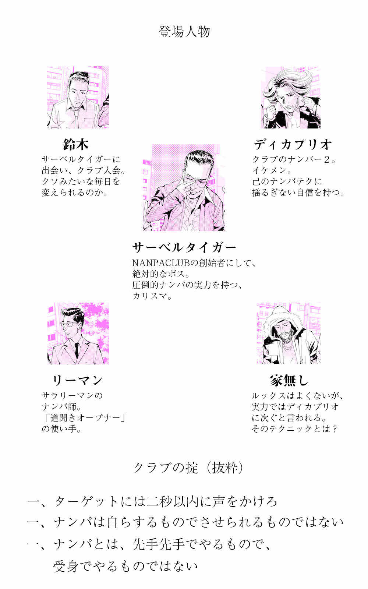
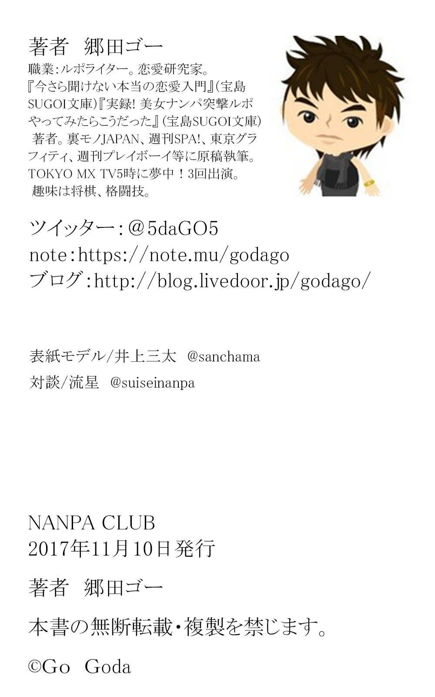

| NANPACLUB | |
| 郷田ゴー | |
| (2017) | |

燃えさかる歌舞伎町、あちこちで爆発の起こる渋谷、暴動が起こる六本木。
何もかもが変わってしまった。いや、俺たちが変えていった。
全てが破壊されていく中で、美女という美女が俺たちのものになっていった。
毎日違う美女を抱き、男たちを支配し、正直俺はもう満腹だった。
だが、燃えさかる炎の中で、抱きついてくる美女たちの中で、奴が俺に言ってくる。
「もっとナンパしろ。もっと破壊しろ。こんなもので満足するな。お前の中の欲望を殺すな 」
と。
冴えないサラリーマン・山田拓郎は後輩の尻拭いに追われ残業をしていた。入社三年目のバカＯＬのしでかしたミス。当然そいつが自ら処理するものかと思っていたら、43
歳独身の非モテ部長は山田に尻拭いを命じてきた。
結局、話せるやつのところにしわ寄せがいくことと、女尊男卑化が進んでいるせいだと山田は考えていた。これでまた、バカＯＬが可愛いわけでもないというのが腹が立つ。50
点くらいのやつが非モテ上司を籠絡し、そのシワ寄せが自分に来る。
「くそったれどもが...今に見てろよ」
山田は一人つぶやいた。
ジメジメとした梅雨。一人での仕事を終え、終電で帰宅。サンクスでビールとピザポテトを買って帰り、ネットでエロ動画を拾いながら、受付嬢を思い出してオナニーして寝た。
その男に出会うまでの俺は、クソみたいな生活を送っていた。
埼玉県Ａ市の中古車ディーラーの会社勤め。車が好きで入ったはいいが、安月給でノルマに追われる面白くない日々。
面白くないのはまだいい。職場に女がおらず、出会いがなく、可愛い新入社員など入るわけなく、この先一生女に出会うこともなさそうなのが問題だ。「今」は耐えられても、「未来」が閉ざされるのは絶望感が襲ってくる。
事務所に恵という女は一人いる。だが俺には格違いの女で、カミングアウトはしてないが社長の女だ。ワンマン社長の女に手を出すわけにはいかない。まあ、出したくても出せないが。あとはおばはんばっかりだ。
なので女と出会うには合コンに行くしかないのだが、そこで「中古自動車のディーラー」と言っても全く食いつかれない。
出会いもない、合コンでも食いつかれない、「ベアーズ」や「ドップル誕生」などのマッチングアプリでたまに食いつかれるのは別アプリに誘導するサクラととんでもないブスとやさぐれたアラフォー女だけ。
そんな満たされない生活の中で俺は不眠症になっていった。
ある日、車の取引の案件で、博多に出張に出かけることになり、安物の中古セドリックに乗り成田に向かった。
くそ暑かった夏の終わりを告げる雨がじっとりと降っていた。
空港に着き飛行機に乗ると、一日ぶりの眠気が襲ってきた。ウトウトしているとき...キャビンアテンダントがこっちにやってきた。
「毛布お持ちしましょうか」
「あ、お願いします...」
朝比奈彩に似た「Ｓ級美女」と言っていいルックスだ。
清潔なタイトスカートで、足を露出しているわけではないが、美脚であることがわかる。こんなコとコンパしているのは芸能人かＩＴ社長か...
もしもこのコが職場にいればな...いても何もできないが...などと妄想しながら寝ようとすると...
「あの...」
隣に座っていたでかいサングラスをかけた男が朝比奈彩似キャビンアテンダントに話しかけた。彼も毛布がほしいのだろうか。
「手紙を受け取ってもらえませんか？」
「誰にでしょうか？」
「あなたにです」
「え...」
「この会社の飛行機何度も乗っていて、実はあなたのことも何回も見ています。気持ちを書いたので、よかったら読んでいただけませんか？」
「あ、はい...」
なんだ、ナンパか？ しかしキャビンアテンダントに名刺を渡すのは聞いたことがあるが、手紙とは...。
朝比奈彩似スチュワーデスが手紙を受け取り去った後も、俺はその男の横顔をずっと見ていた。すると...
「どうした？ 俺に惚れたのか？」
「い、いや...」
実を言うと、ちょっと当たっていた。ナンパをする者を嫌悪する人たちがいるのは知っている。だが、俺はそうじゃない。憧れを持っている。俺はやってみたくてもできない。朝比奈彩似に、自分の意志を伝えるだけでも羨ましい限りだ。
「...なんで名刺じゃないんだ、と思ったか？」
俺の心がなんでもわかるかのようだ。
「あ...はい」
「あのキャビンアテンダントが、一日何人に名刺をもらってると思う？」
「え...そりゃたまにもらうと思いますけど...」
「バカ、５人にはもらってるよ。それが毎日続く。一週間で30
人はもらうだろうな。それにいちいち返すと思うか？」
「思わない...ですね。忙しいでしょうし」
「そこで、手紙だよ。名刺と手紙とどっちがインパクトがあると思う？」
「手紙...ですね」
「その通りだ。きちんと思いを伝える。...といっても、中身は誰に渡してもいいように、あらかじめ書いておいたものだがな」
「あらかじめ書いてるんですね...」
「そう。これがラブレタールーティーン
。使いこなせば、あらゆる美人店員が出会いの対象になる。だがこれは、幅広く奥深い『ナンパ』の一テクニックに過ぎない」
「あ、あの、あなたのお名前は？」
「俺か？ サーベルタイガーって呼んでくれ」
それが俺の人生を変えるサーベルタイガーとの出会いだった。
飛行機を降りると、雨はやみ、雲は消え、空は青く晴れ渡っていた。
博多出張を済ませ埼玉に帰ると、また退屈な日々が始まった。つまらない仕事。出会いのない職場。手の届かない恵をサカナにしてオナニーする日々。
そんなある日。
営業から帰ってくると、事務所に誰もいなかった。本来、恵だけは必ずいるはずなのに姿がない。トイレにしても時間が長い。気になって探してみると...事務所の裏に男といた。まさか社長と...
「ダメだよ...まだ会ったばっかりだし...」
会ったばっかり？ 社長じゃないのか？ 社長じゃない誰かと...なんと暗がりでキスをしている。
「ダメだよ」
そう言って離れたので、俺は慌てて席についた。
「あ、お帰りなさい。お客さん来てますよ」
恵が慌てたように言う。
お客さん...今日アポは無かったはずだが...
「よお」
「サ、サーベルタイガー...！」
二つの驚きが同時に襲ってきた。名刺交換したので、俺の職場はわかっている。しかしそれでもいきなり訪ねてくるのか、という驚き。しかしまあそれはたいしたことじゃない。
問題はさっき恵がキスしていたのはサーベルタイガーだったという事実だ。そっちの衝撃が強すぎて、なんで来たのかとはどうでもよくなってしまった。朝比奈彩似のスチュワーデスにラブレターを渡せる勇気はまだわかる。しかし、初めて訪れた会社の事務と、いきなり仲良くなれてしまうものだろうか。しかもキスをするというのは...。
さらに「自分が知っている人間」というのは衝撃度が違う。憧れていた恵が初めて会った男とキス...。
「なんか、色々戸惑ってるか？」
「まあ...そりゃ」
「お前ここで働いてんだな」
「ええ」
「毎日楽しいか？」
「...いえ」
「いいじゃないか、恵ちゃんと一緒の職場で。ヤったのか？」
「いえ。一応聞きますけど、恵さんと知り合いじゃないですよね？」
「そんなわけねーだろ」
「じゃあさっきのは...」
「見てたか。当然、会ってすぐのできごとだ」
「あんたは一体...」
「お前には今、俺がマジシャンのように思えているだろうな」
「...ええ」
「だが実は、からくりがある」
「からくり？」
「まず、会ってすぐにキスしていたと思っていたかもしれないが、実は30
分くらいしゃべっていた。０．１秒でキスしたわけじゃない。他に上司だ誰かがいて、彼女が一瞬しか喋れないのであれば、さすがにそれで今ここでキスするのは難しかっただろうな」
「それにしても30
分で...」
「それは、『ＮＬＰ心理学
』の『ルーティーン
』を使った。キスするためのテクニックのことだ。別に彼女が一瞬にして俺に惚れたというわけではない」
何を言っているかはよくわからなかったが、キスしていたのは紛れもない事実だ。頭が混乱していた。
「それにな、これも重要なことだが、あのコは『スト４
』だ」
「『スト４』？」
「お前が高嶺の花に思って、手が届かないと思って、妄想だけでオナニーするのが精いっぱいのあのコは、ナンパ師の相場からいえばストレベル４だ。平均よりはまあまあ上くらいのものなんだよ」
「...」
「俺じゃなくても、あれくらいのことをできるやつはいる。何しろストレベル４だからな。後はやる気とルーティーンを知っているかどうかだ」
「ストレベル４...」
「それが『ナンパ師
』だ。それが『コミュニティ
』だ。そしてそのコミュニティの最高峰に立つのが俺たち"NANPACLUB"なんだ」
「...あなたはなんなんですか？」
「NANPACLUBの代表だ」
「NANPACLUBっていうのは...」
「簡単に言えばナンパ講習会
だ。ナンパ講習ってのは、ＰＵＡ
と呼ばれるカリスマナンパ師たちが、主にナンパ初心者、初級者にナンパを教えること。一対一の場合もあるし、一対複数の場合もある」
「はあ...」
「NANPACLUBは、俺も教えるし、俺以外の上級者も初級者に教える。教えられる側は月謝を払い、成長して教える側になると、金をもらう側になる。まあ、講習会とコミュニティの半々みたいな組織かな」
「それで僕に何を？」
「CLUBに来いよ」
「確かにあなたのテクニックに惹きつけられてますが、見ての通りのしがないディーラーで、高額塾に入るようなお金はないんですよ」
「だろうな。見りゃわかる。月６千円でどうだ？ 本来月額３万円のところ80
％
引きだ」
「ろ、６千円だったら...」
そう言われたら、断る理由など一つもなかった。この退屈なクソみたいな人生を抜け出すきっかけを、ずっと待っていたのだから。
金曜日の20
時。俺は池袋に降り立った。埼玉県の多くの駅と同じく、俺の駅からは東京に行くには必ずといっていいほど池袋を通るので、慣れているといえば慣れている街だが、これから始まることを考えると、いつもと違う街に見えた。
エスカレーターを上がり、交差点を渡り、サーベルタイガーに来いと言われた池袋西口公園に。ホームレスたちが円を描くように住み着いており、中央では無名のジャズバンドが演奏をしている。カップルが数組、サラリーマンが数組、行き交う人々が何人も通り過ぎた。
サーベルタイガーが来ると遠くからでも一目でわかった。
ドルチェ＆
ガッバーナのジャケットとパンツ。バッファローボブズのロンＴ。ティアドロップのサングラス。それを着こなす本人。カリスマティックなオーラを発している。
それが合図のように、周りから男たちが集まってきた。サラリーマン風の男が数人、大学生のようなマルイのファッションに身を包んだ男が数人、サーベルタイガーのようなファッションの男が二人、サーベルタイガーとはまたちょっと違うがオシャレな雰囲気の男が数人。さえないおっさんのような男が数人。だいたい30
人くらいだ。
「今日はまず新入りを紹介する」
円陣を組むように集まった男たちの中心で、サーベルタイガーが話し出した。視線が俺に集中する。
「埼玉の...えっと、なんだっけ」
「鈴木といいます、よろしくお願いします」
男たちが「よろしく」「よろしくお願いします」と返してくれた。
「ハンドルネームはまた後でつけてやる。こいつらの紹介も後だ。まずは、クラブの掟だ。じゃあ今日は...太郎、お前がやれ」
「はい！」
マルイファッションに身を包んだ大学生風の一人、太郎が返事をした。
「クラブの掟、一つ！」
「一つ！」
周りに人もいるのに、大声で声を出す。デパートで店員たちが開店前に「いらしゃいませ！」などと声を出すような、営業会社が朝会で「自分から仕掛ける！」などと声を出すようなものだろう。
「ターゲットには２秒以内に声をかけろ！」
「ターゲットには２秒以内に声をかけろ！」
太郎が声を出し、他のメンバーが続くのが繰り返された。その掟とは...
「ターゲットには２秒以内に声をかけろ」
「ナンパは自らするものでさせられるものではない」
「ナンパとは、先手先手でやるもので、受身でやるものではない」
「美女をナンパしろ。ブスをナンパすると、君までブスになる」
「安易に相席屋
とかに行くな。難しいナンパをしろ。これを成し遂げるところに進歩がある」
「連れ出したら放すな。殺されても放すな。目的完遂するまでは...」
「周囲を気にして『ナンパは恥ずかしいからやめておこう』とか思うな。『あそこでナンパしてるから邪魔しないでおこう』と周囲に思われるくらいになれ」
「自信を持て。自信がないから君のナンパには、迫力も粘りも、そして厚味すらがない」
「ガンシカ、罵声、グダを怖れるな。ガンシカ、罵声、グダは進歩の母。積極の肥料だ。ガンシカ、罵声、グダを恐れると、君のナンパは卑屈未練になる」
「一人目に即系には声をかけない」
「あえてフラれろ」
「Ｌゲするまで帰るな」
「地蔵トークするような奴は死ね」
言い終わると...
「開始！」
号令と同時に、男たちが夜の街へと散っていった。
サーベルタイガーがつぶやいた。
「ゲームの始まりだ」
「今のがNANPACLUBの基本理念となるナンパ13
則だ。今は意味がわからないかもしれないが、心に留めておけ」
「はい」
「今日はまず、先輩たちのやり方を見て学べ」
「はい」
「そうだな...一番オーソドックスで勉強になる、ディカプリオのやり方を見るか」
「ディカプリオ？」
「ディカプリオというのは、クラブ内での彼のハンドルネームのことだ。ハンドルネームは、ナンパが一人前にできるようになったころ、お前にもつけてやる。ディカプリオはクラブのナンバー２だ」
池袋西口前のロータリーに、ディカプリオの姿が見えた。メンズ１０９系のファッションだ。
駅前に陣取って、ターゲットを選定している。
「この時点ですでにディカプリオが実力派だとわかる」
「え！ なんでですか？」
「お前が考える、ナンパ師の姿ってどんな感じだ？」
「そうですね、女のコが多い駅の駅前に立って、メンズ１０９みたいなファッションで、かたっぱしから声をかけて...あっ」
「そう、まさにディカプリオの姿だろ」
「はい、でもそれがなんで実力派なんですか？」
「ベタなことをやるというのは勇気がいるんだよ。それをやってしまえるということは、勇気と実績があるということ。『あいつナンパしてるぜ』と男たちに言われようが、女のコに明らかなナンパだと思われようが、関係ないということだ」
「なるほど」
「大量に女のコが歩いてくる状況というのは、数として考えればチャンスが多いが、それだけ初心者にはプレッシャーや恥ずかしさにつながり『地蔵
』におちいりがちだ。『地蔵』とは、ナンパをしようとしているにも関わらず、びびって地蔵のように固まっちまう状態のことだ」
「地蔵...」
後に俺はこの地蔵の恐ろしさを身を持って体感することになる。
「だがディカプリオは地蔵にはならない。ほら...いくぜ」
ディカプリオが動き出した。ややギャル風の女子大生...かフリーターというところか。
「おつかれ。かわいいね」
「え？」
「いや、そのバッグが」
「うるさいよ（笑）」
「それプラダの新作？」
「ううん、新作じゃない」
「今から新作買いにいくの？」
「行かない（笑）」
「どこ行くの？」
「え、買い物」
「俺も行っていい？」
「なんでよ（笑）」
ディカプリオのナンパに見入っていた俺に、サーベルタイガーが声をかけた。
「何気なくやってる普通のナンパに見えているかもしれないが、実はディカプリオはすでに３つ壁を越えている。それが何かわかるか？」
「いえ...」
「まずは地蔵状態ゼロで声をかけたこと。簡単そうに見えて、初心者にはこれがまず最大の壁だ。次に、ガンシカ
をされずに話している。ガンシカとは、完全にシカトされて立ち去られることだ。そして、彼女を見てみろ」
ディカプリオと立ち止まって話している。今から見た人には、昔からの知り合いに見えるだろう。
「足を止めている。これも壁だ。ディカプリオは一瞬にしてこの３つの壁を越えた」
そしてディカプリオは、彼女と歩き出した。
「ディカプリオはこの後、カラオケにいく。そしてギラつき、グダを崩し、ホテルへ行く」
「え？ え？」
何を言っているかわからなかったが、特に最後の意味がわからなかった。会って数分の女性とホテルへ行く？
「これがナンパ。これがオーソドックスの強さなんだよ」
そしてディカプリオと彼女は、サーベルタイガーの言う通り、駅前のカラオケの達人へと入っていった。
俺の考えていた恋愛観、人生観は、ディカプリオ一人によって完全に覆された。
「まずはお前に、完璧なナンパというものを見せた。だがな。当然これが全てというわけではない。ディカプリオは上級者だ。誰もがあれをできるわけではない。あれはもはや一つの完成形だ」
「はい」
「これからお前に、初心者たちがどんな感じかを見せてやる」
そう言うと、サーベルタイガーは東口に向かって歩き出した。
高架下を抜け、Ｐダッシュパルコ、ＬＡＶＩ、四菱銀行を通り過ぎ、サンシャイン通りへ。
「あの辺でやってるはずだが...いたな」
見ると、太郎ともう二人。マルイファッションの大学生風の男たちがサンシャイン通りでターゲットを狙っている。
「太郎と、ドリーマーと、弁慶だ」
「ドリーマーと、弁慶？」
「ドリーマーは、将来渡辺麻友とつきあおうと思っている。だからドリーマー。弁慶は、普段無口で弱気なのに、ネットだとネット弁慶になる。だからネット弁慶だ」
名前からして、ネガティブな感じの二人だ。
「太郎は？」
「太郎は本名だ」
ハンドルネームを名乗ることすら許されていないのだろうか。
「見ていろ。初心者の悪いところが全て出ている」
三人は止まっていた。ターゲットの選定をしているのだろうか。だが、全然声をかけにいかない。もう少し近づき、会話に耳をすませた。
「どれにしようか」
「あれいいんじゃね」
「いやー、でも難しいだろ」
サーベルタイガーが険しい目で見てる。
「あいつらはクラブに入り立て...いやまだ、試用期間と言ってもいいだろう。あいつらをクラブ代表だと思わないでくれ。あれは悪い例だ」
サーベルタイガーは三人に近づいていくと、太郎の頭をどついた。
「おい、ナンパ13
則を忘れたか」
「あ、すいません」
「一つ、ターゲットには二秒以内に声をかけろ。一つ、地蔵トークをした奴は死ね、だ。お前らは死ななきゃいけないんだ」
「すいません！」
「見ろ、お前らがいいとか悪いとか言ってた三人。もういないだろ」
「はい」
「確かにナンパには『選定
』というものもある。だがお前らがそれをやるのは百年早い。初心者が選定を行うと地蔵になっちまうんだよ。まずはかたっぱしから声をかけるんだ」
「はい」
「それに、一人で声をかける度胸がないのはわかるが、三人で三人に声をかけるのはやめろ。実はそっちのほうが難しいんだよ」
「はい」
「わかったら一人ずつに分かれて、一人の女に声をかけろ！」
「はい！」
そう言うと太郎とドリーマーと弁慶は一人ずつに分かれて、ようやく声をかけ出した。
同じナンパと言っても、ディカプリオと太郎たちでは天と地の差があった。それはそのまま、ナンパの奥深さを表していた。一体俺はどこまで行けるんだろうか。
「次は、ディカプリオとはまた違うやり方のナンパを見せてやる。うちのナンバー４、『リーマン』だ」
「リーマン？」
「彼は...あっちだな。ついて来い」
サンシャイン通りを歩き、東京ハンゼを過ぎ、サンシャイン60
の下に来た。仕事を終え、帰路につくサラリーマンたちが歩いている。
「あのスーツを着ているのがリーマンだ」
「え...どの...」
ディカプリオは、一目でそれだとわかった。太郎たちも、うろうろしながら品定めしている姿でナンパ集団だとわかった。だがリーマンはわからない。
「今女に話しかけたやつだ。近づいて聞きにいけ」
家路を急ぐサラリーマンたちの中で、ＯＬに話しかけた男がいた。急いで近づいて会話を聞く。
「すいません、池袋駅ってどこかわかりますか？」
「池袋駅ですか？ あの東京ハンゼを曲がって、左に行くんですよ。そのまましばらくサンシャイン通りをまっすぐ行くと、駅が見えてきます」
「えっと...東京ハンゼって...」
「ハンゼは、あそこにファミリーマートがありますよね...あ、っていうか私も駅方向まで行くんで途中まで行きますか？」
「いいんですか、すみません。お仕事終わったところですか？」
「はい、そうです」
「この辺に勤めてらっしゃるんですか？」
「はい」
「僕は営業で来たんですけど、道に迷っちゃって...」
「そうなんですね」
気づくとサーベルタイガーが俺の横にいた。
「リーマンも今、３つをクリアした。何かわかるよな」
「えっと...地蔵じゃなくなりました。それに、ガンシカされてません」
覚えたてのナンパ用語を使うのはドキドキする。
「そうだ。それに、足は止めていないが、並行トーク
をし始めた。そして、よくも悪くもディカプリオと違うのは、あの女は今、自分がナンパされていることにすら気づいていない」
「なるほど」
リーマンは話を続けている。
「ブクロイケ株式会社に行ってきて、今度その人を接待したいんですけど、この辺で美味しいお店ってご存知ですか？」
「美味しいお店ですか？ うーん...西口になっちゃうと遠いですよね」
「いや、西口でもいいですよ」
「最近、魚銀ができたんですよ」
「あー、魚銀、おいしくて、そこまで高くないみたいですね」
「そうなんですよ。しかも、量が多いんです」
「いいですね。...ちょっと、接待の下見がしたいんですが、よかったら今から一緒に行ってもらえませんか？」
「何言ってるんですか（笑）帰るんで無理ですよ（笑）」
さすがのナンパクラブナンバー４も、断られたりするんだと思ったが...
「ここが、間接法の一番難しいところだ。そしてここからリーマンの本領が発揮される」
サーベルタイガーはリーマンから視線を外さない。
「実は、素敵な方だと思い、声をかけたんです」
「えー、じゃあ池袋駅わかるんですか？」
「いえ、それはわからないです（笑）」
「いつもこんなことされてるんですか？」
「してないです。あなたが素敵だからです...名前聞いてもいいですか？」
「...井上です」
「井上さんが素敵だから声をかけてしまいました。ちょっとだけでいいんで、魚銀行きませんか？」
「えー...」
「お店の前まででいいです。お願いします」
「じゃあ店の前までなら...」
こうして二人は並んでサンシャイン通りを歩いていった。
「今のが、間接法
だ」
「間接法？」
「ナンパには、直接法と間接法がある。声をかけた瞬間にナンパだと相手にわからせるのが直接法。ディカプリオのやってたやつだ。それに対して、最初はナンパだとわからせないのが間接法。リーマンは間接法を得意としている」
直接法と間接法...やはりナンパは奥が深い。
「間接法は、ナンパと知らせないので、シカトされる確率が減る。初心者にもやりやすいやり方だ。だが一つ難しい点がある。なんだかわかるか？」
「...」
見当もつかなかった。
「結局、どこかでナンパしなきゃいけないんだ。それが、間接法だと直接法よりさらに不自然になる。道を聞いたところからナンパに切り替えないといけないからな」
「なるほど」
「しかしリーマンは、そこは気にしないで、一気にナンパに切り替える」
確かにさっき、一気にアクセルを踏み込んでいた感じがした。
サーベルタイガーのLINEが鳴った。
「リーマンからだ」
見せられたLINEには
「連れ出せました」
と書かれていた。
ナンパ開始30
分ほどで、すでに知る限りでも二人が女のコを連れ出すのに成功している。すごい世界だ。
「すごいと思ってるだろうが、さらにすごいものを見せてやる」
そういうとサーベルタイガーは、東口の入り口に俺を連れてきた。
「ここは激戦区だ。あいつを見てみろ」
見ると、ホスト風のスーツの男が女を物色している。
「あいつは、スカウトに見えるかもしれないがナンパ師だ。ヒロシっていうホスト崩れだ。だが戦闘力は高い」
確かにシュっとしたルックスとファッションで、サーベルタイガーやディカプリオほどではないが、オーラを放っている。
そこに、スーツをぱりっと着こなした美女が現れた。ハッキリとした顔だち、推定Ｆカップの服の上からでもわかる巨乳、目が釘付けになる美脚、男を寄せ付けない空気...。
「ああいうのを、『Ｓ級美女』という。ストレベル７～10
。お前がこの先目標とする女たちだ。Ｓ級になると、出現するだけで珍しい」
「はい...」
あんなのを目標に...俺が？ 全く想像できなかった。話すことすら想像できない。あれに比べたら恵がストレベル４というのも納得できた。
「ヒロシは動くぜ」
Ｓ級を見たヒロシの動きはさすがだった。躊躇も迷いもなく、一直線に声をかけた。２秒どころか１秒もかかってない。常時野生に身を置く者の足捌きだった。
ちょっと位置的にはっきりとは聞こえないが、おそらく間接法というよりは直接法なのかという声のかけ方だった。すると、サーベルタイガーが俺の心を読んだように言った。
「ヒロシはゴリゴリの直接法だ。そもそも、あのファッションは直接法限定。あれで道聞いてたらおかしいだろ。ファッションで女のコを圧倒して、そのまま連れ出す近距離パワー型だ」
Ｓ級女はシカトせず、立ち止まった。すごい。ここまででも凡人にはできない。だが、彼女はそのまま立ち去ろうとする。ヒロシは粘ってついていく。だが結局、彼女は止まらず、ヒロシは名刺を渡して戻ってきた。
「無理だと思っても名刺まで渡す。ヒロシもプロだ。だが...ヒロシじゃなく、あの女から目を離すな」
「え？」
ヒロシを振り切り、サンシャイン方向へ歩き出したＳ級へ、四菱ＵＦＯ銀行の前あたりで、冴えない男が話しかけた。小汚い、ヒロシよりワンランクもツーランクも下と思われる男だ。
最初Ｓ級も、不審者にでも話しかけられたかと思ったのか、顔をしかめ無視しようとした。だが、次の瞬間信じられないことが起こった。Ｓ級美女が腹を抱えて笑い出したのだ。
「...え!?
」
「あれが『オープナー
』だ。あれで、ナンパの世界はまた大きく変わる」
しばらく笑った彼女は、自らスマホを取り出し、なんとさえない男とLINE交換を始めた。
「あの男が『家無し』。うちのナンバー３だ」
一週間後、再びクラブが開催された。
「前回の結果報告からしてもらおうか。まずは太郎」
「はい。３素振り、２声かけでした。番ゲはありません」
「ドリーマー」
「２素振り、３声かけでした。番ゲはありません」
「弁慶」
「２素振り、５声かけでした。番ゲはありません」
サーベルタイガーの顔が険しくなった。
「お前らやる気あるか？」
「はい」
「今日は一人最低10
声かけするまで帰ってくるな」
「はい、すいません」
その後も結果報告と、サーベルタイガーのダメ出しが続いた。
「次、リーマン」
リーマン...綺麗なＯＬと、サンシャイン通りを歩いていくところまでは見た。あの後魚銀まで行けたのだろうか。
「５声かけ１連れ出し、即
りました」
即りましたという言葉を聞き、みんなから拍手が起こった。後から聞いたところ、「即」とは、会ったその日にベッドインすることらしい。
「おめでとう」
「ありがとうございます」
「俺は途中まで見てたけど、簡単にみんなに共有してもらっていいか？」
「はい。サンシャイン60
付近で声かけしてました。間接法です。５人めのＯＬに道聞きオープナーで和むことができました」
わからない言葉も出てくるが、とりあえず話を聞く。
「あ、ちなみにスト６です」
「そうか。スト７と言ってもいい感じだったけどな」
「ありがとうございます。接待の場所を聞いて、魚銀というところだったのですが、そこまで連れていってもらいました。そこで一緒に入り、お礼ということで飲みました。二時間飲んでラポール
を形成し、二軒目のバーへ。そこでギラついて、ホテルへ行きました」
また拍手が起こった。
「おめでとう。素晴らしいが、一点あるとすれば、魚銀の場所が遠かったな」
「あ、はい」
確かにサンシャインから西口の魚銀は遠い気はする。
「彼女が出してきた店だから仕方ないが、飲み屋なりカラオケなり漫画喫茶なり、なるべく早く入ってしまったほうがいい。女ってのは何で気が変わるかわからんからな」
「そうですよね。わかりました」
完璧に見えるナンパにも改善点があるのか。つくづく奥が深い。
「次、家無し」
「はい」
相変わらずさえない格好だ。しかし、この男が前回のナンバーワンをLINEゲットできたことは自分の目で見た間違いない事実だ。
「スト７のＯＬがいたんで...」
「おいおい、あれはスト８はあるよ」
「そうですかね、スト８に声かけしてＬゲしました」
「どうなった？」
「明日会う予定です」
「うん、準即
しろよ」
「はい、ありがとうございます」
「次、ディカプリオ」
「うっす」
ディカプリオだけ他のクラブ員と雰囲気が違う。サーベルタイガーとも対等に近い感じだ。
「２声かけ１番ゲ１連れ出しカラオケ即です」
また拍手が起こる。しかし...カラオケ即!?
「おお、カラオケの達人で即ったのか」
「はい。ホテルに行くのも面倒だなと思いまして」
「そうか、やんちゃだな。ディカプリオはもう格下を即るのは完璧だから、もうＳ級だけを狙うようにしようか。Ｓ級縛りだ」
「うっす」
やはりリーマンとかとは態度が違う。二人の関係性が気になったが、すぐにそれどころではなくなることをサーベルタイガーが俺に向かって言った。
「じゃあ今日は、鈴木の初めての実戦だな」
「あ、俺のですか」
「最初は特別に俺ががっつり見てやる」
ナンパデビュー。緊張はあるが、次々に成功するCLUBの先輩たちを見ていると、同時に高揚感もあった。
あんな可愛いコと話せるのか、もしかしたら彼女になれるのか、俺はどこまで通用するんだろうか...。
サンシャイン通りの裏手。ミスタードーナツがある通りに連れていかれた。
「本当はサンシャイン通りでもいいが、お前が萎縮すると思ってな。ちょっと人が少ない裏通りに来た」
「はい」
「ナンパとはなんなのか。これは奥深い。例えば上級者は、イエスセット
で断りにくくさせてから連れ出し、ミラーリング
を混ぜてなごむ」
「...え？ え？」
「即を狙うのか狙わないのかというのも争点だ」
「はあ...」
「だが、そんなことをごちゃごちゃ考えるのは後だ。初心者に襲い掛かるのはまず『地蔵の壁』だ」
「地蔵の壁...」
「そこで、まずは女に慣れるために、『素振り
』をしてもらう」
「素振り？」
「いきなり女に声をかけることができるか？ ちょっとやってみろ」
行こうとした。先輩たちのように。簡単に見えた。だが...言うはやすし、行うは難しだった。意と反して、足が前に出ていかない。
「だろ。だから素振りだ。この前間接法を見ただろ？」
「間接法...リーマンさんがやってたやつですね」
「そうだ。彼は、道を聞くところから入って、ナンパに変えていった」
「はい」
「とりあえずお前は、道を聞くだけでいい」
「なるほど」
「それで慣れろ。もちろん、いけるならそのままナンパにしてしまっていい」
「わかりました」
そして俺は、初めての声かけをすることになった。
いつもと変わらない街。池袋。だが...
ナンパをするという目で街を見ると、今までは違う風景に見えてきた。緊張感と可能性が街を包んでいく。自然と視線が女のコにフォーカスされていく。男がエキストラに見えていく。
女のコ二人組は通るが、なかなか一人は来ない。ようやく一人が来たと思ったが、イヤホンをして、足早に通りすぎてしまった。すると...
「どうした？ 行けよ」
サーベルタイガーに言われた。
「え、でも急いでそうなんで...それにイヤホンしてるし...」
「バカ。いいか、よく聞け。お前は今日初めて池袋に来て、池袋駅がわからないんだ。池袋駅に一刻も早くいかないと、親の死に目に会えないかもしれない。そんなとき『あのコは忙しそうだ』なんて遠慮するか？」
「いえ、それは...」
「じゃあ行けよ。いいか。ナンパ上級者は、連れ出した後にどこ行こうとか、あのグダが来たらどうやって崩そうとかは考えるけど、断られたらどうしようとか、ナンパしやすいのはどのコだろうとかは考えない。初級者は、断られたらどうしようとかは考えるのに、足を止めた先のことを考えていない。考えるべきことが逆なんだよ」
そうこうしている間に、さっきの女のコは、もう遥かかなたまで行ってしまった。
「クラブの掟である『２秒以内に声をかけろ』というのは、精神的な意味もあるが、こういう物理的な意味もあるんだ。数秒あれば、人間は何十メートルも離れてしまう」
「なるほど」
「それに初心者は、イヤホンをしているイヤホンをしているというが、してたからなんなんだよ。それを外させるくらいしないでどうする。お前らはこれから女の服を脱がすんだぜ」
全く言う通りだった。イヤホンを外す手間を怖がってるやつが、下着を脱がすことなど不可能だろう。
退路を断って、おとなしそうなコに目をつけた。道を聞くだけ。俺は道を聞くだけだ...
「すいません」
「はい？」
「池袋駅ってどこですか？」
「ここ曲がってまっすぐです」
「ありがとうございます」
一瞬のことだったが、かつてない達成感と高揚感があった。俺は今、見知らぬ女と話したのだ。
「できたじゃないか」
「はい、ありがとうございます」
「ただ、『すいません』で止めるな。ナンパと思われてシカトされてしまうことがある。『すいません、池袋駅ってどこですか？』と、途切れずに続けるんだ」
「...なるほど...」
対女との戦いの中では、一瞬の間も命取りになるということを学んだ。
そして俺は、その日五十人に道を聞いた。
次の週。
素振りの修行を終え、いよいよ本格的な声かけをすることになった。直接法か間接法で迷ったが、今までの道聞きの勢いをそのまま使うために、最初は間接法でやってみることに。...というか、直接法は自信がなかったというのが本音だ。
二人道聞きで慣らして、いよいよ...
「すいません、池袋駅ってどこですか？」
「ここを曲がって、右にまっすぐです」
「ありがとうございます。あ...」
女のコは行ってしまった。二人目。
「池袋駅どこですか？」
「あっちです」
「よかったらお食事しませんか？」
「...」
完全にシカトされた。そんなことが５人続いた。
次は誰に声をかけよう。
あのコはイヤホンをつけている...。
あのコは速足だから難しいだろう...
あのコは彼氏と待ち合わせだろう...
あのコはあんまり可愛くない...
あのコは可愛すぎる...
いつの間にか、足が止まっていた。
世界が全員敵に思えた。この世で一番モテないのは俺なんじゃないかと思ってきた。
「おい。言わなくても自覚しているよな」
「...はい」
「それが、『地蔵』だ」
いつの間にかサーベルタイガーが隣にいた。
「はい...道聞きの時は何も考えなかったのですが、実際ナンパして、断られたりすると、色々考えるようになってしまいました」
「ヤりたくもないブスに声かけろとは言わないが、えり好みしないで声をかけろ。イヤホンしてたってしょーもない音楽聴いてるだけだし、追いつけないくらいの速足でなければがんばって自分も速足になれ。彼氏が出てきたらごめんなさいって言って退散すればいいんだ」
「はい！」
「道聞きの素振りを思い出せ。あくまでも基本はそれだ。そこに、感謝を持って、本音で『お礼にお食事をご馳走させてください』と言うんだ。それを繰り返せ！」
「わかりました！」
「『断られたらどうしよう』って、断られたら『確かに俺今ナンパ失敗したけど別にへこんでないし彼女とかいるし別にいーわ』みたいな顔して元の位置に戻るだけだ」
「はい！！」
怖くても、震えても、勇気を込めて、一歩を踏み出す。これが、ナンパなんだ。
ハットをかぶり、ガウチョパンツを履いた、オシャレな推定女子大生発見。
「あの...」
「はい」
「東京ハンゼはどこですか？」
「東京ハンゼはこっちです。あ、私行くところですよ」
「あ、ほんとですか、ついて行ってもいいですか？」
「はい（笑） すぐそこですけど」
「池袋詳しいですね。この辺に住んでるんですか？」
「いえ、ちょっとハンゼに用があって」
「コスプレとかですか？」
「なんでわかったんですか（笑）」
「いや、ハロウィンが近いんで」
「そうなんですね。僕もコスプレにちょっと興味があって、『七つの大罪』とかいいなと思ってるんですよ」
「あー、いいですね」
そう言ってる間に東京ハンゼについてしまった。
「よかったら、コスプレの話したいんで、LINE教えてもらっていいですか？」
「はい」
...嘘みたいだが、本当の話だ。
ナンパデビューで、いきなりLINEゲットしてしまった。
ハンズに入っていく彼女を見送っていると、サーベルタイガーが拍手しながら声をかけてくれた。
「おめでとう」
「ありがとうございます...いや、俺、本当に感動しています」
「この感動を忘れずに今後もナンパに励めよ」
「はい」
「今お前がＬゲ成功した理由は、大きく分けて二つある。一つは、ナンパって、『初めて』ってのが結構重要だったりするんだ」
「というと？」
「まずこの『初めてのナンパ』というケースだ。何しろ、全くナンパに慣れてないお前がやるから、ナンパっぽさが出ない。ガチっぽくなるんだ。ベテランの間接法を使うナンパ師は、今のお前のような雰囲気を、演技で作る。お前は素でそれができるから強いんだ」
「なるほど」
「そして、これは理屈ではなんとも説明できないんだが、『初めて』のヒット率は高いんだ。街出ての一人め、クラブに最初に入ってきた女。さらに、喫茶店で休憩してて、そこから出て一人め、帰ろうとして駅降りて声かけた一人めとか」
「そうなんですね...」
「それにもう一つの理由。これは、俺がお前を誘った理由でもあるんだが、お前向いてるんだよ」
「え...」
そんなことは初めて言われた。サーベルタイガーに言われたのが初めてという意味でも初めてだし、人生で誰かにそんなことを言われた記憶がなかった。学校でも、ディーラーの仕事でも、褒められた記憶がない。
「イケメンとは言えないまでも整った顔、警戒させない雰囲気、それに人の言うことを素直に聞くし、素直に実行する」
「はあ...」
「素振りだって、ただの道を聞くだけなのに、なんだかんだ理屈をつけてやらないやつは山ほどいる。それをお前はきちんと実行し、五十人やりきった」
「なるほど...」
「ただ、今のはLINEだけでなく、飯にも誘えたな。東京ハンゼに一緒に入っていってもよかったんだ」
「すいません...ですよね」
「今日中に次会うアポを取れ。あの女準即できるぞ」
「準即？」
「会ったその日にヤるのが即。会った日の次のアポでヤるのが準即だ」
ナンパ用語も、しっかり覚えないとと思った。
アポが取れた俺に、サーベルタイガーが教えてくれた。
「ナンパという戦場に対し、アポは戦略・知略ゲームだ。逆に、完全情報ゲームに近づくということでもある。ナンパ強者界隈のみならず、有名な就職本でも『俺たちの仲間は、女と二人になったら必ず口説ける』という表記がある。戦略を立てて、パッションを持って行けば成功できるフェーズなんだ。実はＬゲより簡単なフェーズなんだよ」
その日のうちに、僕はえみさんにLINEした。
「今日はありがとうございました。無事に目的のものが買えました。えみさんは何を買ったんですか？」
これで返事が来るかどうか。来なければせっかくLINEゲットできても「死番
」と言ってお蔵入りになる。
30
分待つ。一時間待つ。一時間が半日くらいに感じる。一時間半が経ったころ...
ピンポーン
LINEが鳴った！ はやる気持ちを抑えてスマホを見ると...
「鈴木さん、今日ナンパどうだったんすか？」
太郎だ。鬱陶しい。女からのLINEを待っている時の男からのLINEほど鬱陶しいものはない。やりとりが続くのも嫌なので、無視しようと思った...その時、トークが一件増えた。
「買い物おつかれさまでした。私はブラブラして結局何もしないで帰りましたよー」
えみさんだ！
がっついてると思われるのでそんなに早く返してはいけないとサーベルタイガーに言われていたが、我慢できないし、もう既読にしてしまったので返すことに。
「いつもどういうコスプレされてるんですか？」
今度は早めに返信が来た。
「言ってもわからないようなマニアックなのもやってますけど、ハンター×ハンターとかもしてますよ」
「ハンター×ハンター僕も好きです。誰が好きですか？クラピカですか？」
「よくわかりましたね。私クラピカのコスプレやってるんですよ」
「そうなんですか！写真見たいです（笑）」
「まだ早いですよー（笑）」
ここだ。熱が冷めないうちに打つ。
「よかったら今度、お食事しながらハンター×ハンターの話しませんか？」
「えー...でも全然知らないじゃないですか」
そんなにうまくはいかないか。どうすればいい。考えろ。必死で考えろ。俺はこの時、車を売る時のように、いや、車を売る時以上に頭をフル回転させた。
「そしたら、今劇場版ワンピースやってるじゃないですか。あれ観に行きませんか？」
本当はハンター×ハンターの映画でもやってれば一番よかったのだが、そうもいかない。ずっと連載休止していて、アニメも映画もできようもないのだから。...どうなる？？
「それちょっと観たかったんですよね。行きますか（笑）」
アポが取れた！
アポの日。
待ち合わせた新宿駅にえみさんはドタキャンせず現れてくれた。Ｔシャツにショートパンツからの生足がまぶしい。
「行きますか」
新宿ピカデリーに。予約していたのでチケットを取る。
９Ｆに行き、劇場版ワンピースを楽しんだ。
そして...
「楽しかったですね！」
「思ったよりよかったです」
「お食事いきませんか？」
「はい」
予約していた個室居酒屋へ。
個室居酒屋にしたのはサーベルタイガーの助言だ。
「お前、Ｌゲしたそのコと映画行ってどうしようとしてる？」
「そうですね...何回か遊んで告白して...」
「それがダメなんだ。ナンパしたコと何回も遊べると思うな。たまたま気まぐれで遊んでくれてるだけなんだ。特に初心者とは。一回目から勝負にいけ。つまらない男と思われるくらいならどスケベな男と思われて嫌われるほうがマシなんだよ」
「なるほど...」
そもそも、サーベルタイガーがいなければ、NANPACLUBがなければえみと映画を観ることもなかった。であればモジモジプラトニックラブをしてズルズル失敗するよりも、言うことを聞いて一か八か攻めるほうがいい。
女と二人でメシを食うというのは、圧倒的な会員数を持つ人気メルマガ『週刊金融日記
』の「恋愛工学
」でいう「ＡＣＳモデル
」の「Ｃフェーズ」にあたる部分らしい。
ＡフェーズはAttractionフェーズ。出会いの部分。これはＬゲしてアポを取れた時点で成功らしい。そして、第二段階がＣフェーズ。ＣフェーズはComfortフェーズ。相手との信頼関係（ラポール）を構築するフェーズ。恋愛工学が浸透する以前まで、ナンパ師たちに「なごみ
」と呼ばれていたフェーズだ。
信頼関係を構築し、いよいよ肉体を接触させるＳフェーズに突入する。ＳフェーズはSeductionフェーズ。性的誘惑のフェーズ。ナンパ師たちに「ギラつき
」と言われるフェーズ。サーベルタイガーいわく...
「セクハラ事件になったり、『まだ早いよ』とか言われたり、『そういうことする人だと思わなかった』とか言われるのは、このＣフェーズでラ・ポールを形成していないのに、Ｓフェーズに行ってしまうから起こる。きちんとＣフェーズをクリアしてから、次にいかなければいけない。かといって難しいのは、もうＣフェーズをクリアしているのに、グズグズしてＳフェーズにいかないと、女のほうから見切られてしまうということだ。Ｃフェーズはクリアする。そこで止まらず、そのまま、Ｓフェーズに行かないといけないんだ」
そういえば思い当たるふしがある。
例えば合コンなどで知り合った女のコとデートにいく。童貞の頃は、モジモジしてしまい、相手に見限られてしまった。
かと思えば、童貞を捨て、ちょっと強気な頃になると、ムラムラが先に立ってしまい、初デートで仕掛けて、「こんな人と思わなかった」などと嫌われてしまった。延ばすのではなく、焦るのではなく、Ｃフェーズをクリアすることを考えないといけないのか。
それらを考え、きちんとラポールを形成し、なごんだ上でＳフェーズに移る...ギラつけるように、個室居酒屋をチョイスした。
...だがしかし、居酒屋に入った途端想定外のことが起こった。想像していたＬ型の椅子ではなく、対面の席に通されてしまった。これでは接触できない...どうする...。考えろ...。
「かんぱーい」
「ワンピース楽しかったね...」
「そうですね...」
しばらくは映画の話で盛り上がった。悪くない感触だが、俺だから盛り上がってくれているのか、誰にでもこういうリアクションなコなのか、判断に迷うところだ。
「えみちゃん彼氏いるの？」
「いないよー。鈴木さんは？」
「いないよー。どれくらい付き合っていたの？」
「１年くらいかな」
その時、サーベルタイガーからLINEが来た。
「どーだアポは。まさかもうラポールが形成されているのに、グダグダ話してるんじゃないだろうな。早くＮＬＰ心理学肉弾戦を仕掛けていけ」
見透かされているようなLINEを見て、行動に移すことにした。ＮＬＰ心理学とは？それをサーベルタイガーは「心理戦編」と「肉弾戦編」に分け、アポの必殺技としていた。そしてそれを俺にも教えてくれていたのだ。
「俺占いできるんだけど、占ってあげようか」
こう言われて断る女はいない。
「じゃあ手相見せて」
えみの手を持った。つきあってもいない女の手を握ってしまった。普通に「手をつなごう」では断られていただろう。これが「ルーティーン」というものか。
えみの温かな体温が伝わってくる。これだけで心拍数は上がっていた。
「うーん、生命線はいいね。頭脳線は...ちょっと待ってね」
そう言って立ち上がり、さりげなく横に移動する。問題だった、Ｌ字型個室じゃないという点をクリアできた。
「うーん、悪くないね...」
肩がふれあい、手を繋ぎ合っている。呼吸を感じる。
目を見つめる。
サーベルタイガーとの会話を思い出した。
「ＣフェーズからＳフェーズに移るまで待たなければいけない、また、Ｓフェーズになったのなら、ギラつかなかければいけないのはわかりました。でもそれは、どうやって見極めるんですか？」
「それは、ＩＯＩ
を見極めるんだ」
「ＩＯＩ？」
「ＩＯＩとは、indicater of interest。簡単に言うとオッケーサインのことだ」
「オッケーサイン...」
「まず、ナンパをする際のＩＯＩがある。これは、気がついてほしそうに髪を揺らす、視線を合わせると見つめてくる、笑いかけてくる、近くに来るなどだ。このサインを確認したらナンパすればいい」
「なるほど」
「そして、Ｃフェーズに入り、Ｓフェーズに入ってもいいというサインが、瞳孔が開き潤んだ眼で見てくる、こっちからのボディタッチを拒絶しない、ひざをこちらにむける、体全体が近づくなどだ。このサインを確認次第、ギラつくんだ」
「はい！」
改めてえみを見てみる。
「...何？」
えみが笑いながら聞いてくる。
瞳孔が開いている...かどうかはわからないが、少し赤みがかった潤んだ目で見ている。ひざをこちらに向けているし、当然ボディタッチは拒絶されていない。
「いけ、キスしてしまえ」
頭の中のサーベルタイガーが言う。唇を近づける。拒絶されない。キスをする。拒絶されない。
そして...二人は自然に舌をからめあっていた。
俺はＬゲした女...えみと準即できた。
衝撃的だった。
告白もしていなければ、恋人でもない。
好きかどうかもわからない。
「行動」と「言葉」のみでセックスができたのだ。
サーベルタイガーに報告したところ、喜んでくれはしたが、「えみは『スト４』であり、ナンパの基本技とお前のスペックなら当然対応できる範囲」ということ。
しかし、俺の中では違う。世界観が...いや、世界が変わってしまったのだ。
「ナンパ」して「ルーティーン」「ＮＬＰ」を使えば無限に女のコとヤれる...これを「革命」と呼ばずなんと呼ぶのだろう。
えみと継続的にセックスをしながらも、俺はナンパをもっと極めたいと思った。
今日は合コンだ。気合いを入れて、あえてちょっと遅れて行った。
いつもはいかない高めの飲み屋の個室。テンションが上がる。
入ると...
「こんばんはー」
女は６人いた。...ブスが４人。普通が１人。まあまあが１人。
男は２人しか来ていない。ヤマタク含め３人だ。
「おせーよー」
「あれ、俺が最後じゃなかったんだ」
早くも帰りたくなってきたが、さすがにそうもいかない。
つまらない自己紹介。知りたくない情報。
さらに、まあまあなやつはしょーもない男と意気投合している。
俺はこんなしょーもない男にも勝てないのか...
食べ放題飲み放題でローストビーフなど、何やら高いメニューが次々出てくる。なんでこんなブスたちにこんないい物を食べさせるんだ...。
しかも、プラスワインとか、おそらく飲み放題メニューにないものも頼んでいる。これはバカ高くなるぞ...。
遅れていた男がついたくらいで、理由をつけて帰ることにした。
しかし...
「わり、女ちょっと安くするんで、８千円いい？」
地獄とはこのことだと思った。
ビールとピザポテトを買って帰り、ネットでエロ動画を拾い、合コンにいたまあまあのコを思い出してオナニーして寝た。
えみとヤった後、俺はサーベルタイガーにお礼を言いに言った。
「ありがとうございました！」
「おう、よかったな」
「こんなうまくいくとは思いませんでした！ 人生変わった気分です！」
「それはよかったが...今、そのナンパした女をどう思ってる？」
「そうですね...。もちろん、一夜を共にしてくれたことは感謝しています。けれども、正直みなさんのナンパを見ていると、彼女には申し訳ないけどまだまだ満足できません。もっとナンパを極めたいと思っている自分がいます」
本音だった。声かけしなければいけない中で、えみに声をかけ、結果を出すことができた。暖かい信頼関係を築くこともできたし、エキサイティングな夜を過ごせた。本当に感謝している。だが...。
じゃあえみを彼女にして、つきあっていこうかというと...俺は色々知りすぎてしまっていた。えみはブスではないが、職場の恵よりも可愛くない。その恵は簡単にサーベルタイガーに心を奪われていたし、リーマンやディカプリオがゲットした女たちよりも、言っちゃ悪いが遥かに下だ。もっと上を目指したい...。
「色んな気持ちが渦巻いているだろうな。だが、またお前は一つハードルをクリアした」
「え...」
「オンリーワン中毒
の壁だ」
「オンリーワン...」
「一般的に『恋』と呼ばれる心理状態だ」
「え...恋がいけないんですか？」
「そうだ」
「そうだって...なんでですか？ そのためにみんなナンパしてるんじゃないんですか？」
「違う。恋と、女を落とすのは、似て非なることなんだよ」
「はあ...でも、なんで恋がダメなんですか？」
「女は追われるのがイヤで、追うのが好きな生き物なんだと。お前は追われなきゃいけない。追われるのに一番いらないのが、そのコのことを考えると夜も眠れなくなり、何度もLINEを確認してしまう『恋』という感情だ」
「なるほど...」
「いつかわかる日が来る。まずはナンパに励め」
サーベルタイガーの言いつけを守り、えみをキープしながらも、俺はナンパテクニックを磨いた。
クラブの日は、誰に言われなくとも、百本ノックを心がけた。百本ノックというか...まずはひたすら声をかけまくった。Ｌゲするまで声をかけるのをやめなかった。そして連れ出し。ダメだったら、また戻って声をかけた。
そして、ついにはクラブではない日も一人で街に出た。「完ソロ」というやつだ。だが俺はもうビビることはなかった。それはサーベルタイガーに言われた一つの言葉が原動力となっていた。それは
「戦争に行くよりはマシだろ 」
というもの。
かつて日本には大きな戦争があった。銃を持って敵と撃ち合う人もいれば、いつ撃ち落とされるかわからない戦闘機に乗る人もいれば、戦艦で全滅した人たちもいる。焼夷弾が降ってきて、最後には原爆が落とされた。死ぬのが前提の特攻隊という人たちもいた。
それに比べてナンパのなんと平和なことか。失敗しても死なないし、殺さないし、爆弾も降ってこないし、何度でもやり直せる。せいぜいシカトかののしられるくらいだ。
しかも俺は、シカトされることもなくなっていた。「間接法」に的を絞ったのだ。間接法はリーマンがやっていた手法。まずは道を聞くなり、ナンパじゃないように接近する。平和な日本で、教育が行き届いた女性達は、無視することなく丁寧に教えてくれる。そこからナンパへの移行が腕の見せ所、腕の磨き所だ。
初めての即ができたある日。サーベルタイガーに呼ばれた。
「どうだ調子は？」
「はい。初めて即できました」
「おお、よかったな」
「声かけへの躊躇もなくなりました」
「うむ」
「最近クラブ会員も増えてきましたね」
ツイッター、メルマガで、俺はちょっとした有名人となっていた。ナンパの様子を、逐一ツイッターに投稿し、詳細は師匠のメルマガに投稿した。初心者だった俺のリアルな成長ストーリーは共感を呼び、30
数人だったクラブの会員はいまや百人を超えていた。俺をスカウトしたサーベルタイガーの目論見は、見事に的中したわけだ。だが、サーベルタイガーはどこか浮かない顔をしていた。
「組織がでかくなってくると、その分問題も増えてくる」
「問題...ですか？」
「ナンパ師なんて連中は、みんな元々一匹狼気質だ。果たしてどこまでまとまって走っていけるのか。現に家無しは脱退をほのめかしている」
「家無しさんが...」
「それに、人数が増えるとリーガル的なリスクも増えてくる」
「リーガル...」
「法律的な問題だ。18
未満とヤっちゃったり、無理矢理ヤっちゃったりな。CLUBの人間がそういうことをやってしまうと、そいつ個人の問題だけとはいえず、CLUB全体の問題になる」
「なるほど...」
確かに、少なくともトップであるサーベルタイガーには、いらない火の粉は飛んできそうだ。
「それにな...」
サーベルタイガーの目がさらに曇った。
「天下布武を目前にした織田信長がなんで志半ばで死んだと思う？ 敵に殺されたんじゃないんだ。味方だった明智光秀に裏切られたんだよ」
「...」
「お前、しばらくディカプリオと一緒に行動しろ」
俺は次のクラブの日を待たず、すぐにディカプリオにLINEをした。彼女ができたのも、即ができたのも、おそらく今後女に困らないのも、サーベルタイガーのおかげだ。サーベルタイガーの命令は絶対だ。
それに、師匠の指示抜きにしても、ディカプリオに興味があった。俺が台頭してきたといっても、所詮は間接法だ。ディカプリオの何も恐れない大胆な直接法には興味がある。
「おつかれさまです。次回のクラブの時に、勉強させていただきたいので、合流させていただいてもよろしいでしょうか？」
どのような返事があるのだろうか。もしもディカプリオに謀反の意思があり、サーベルタイガーに敵意があるのであれば、サーベルタイガーの秘蔵っ子のような俺を近づけたくないと思うかもしれないが...
が、あっさりとメッセージは既読になり、「ＯＫ」のスタンプが届いた。サーベルタイガーの考え過ぎなのだろうか...。
金曜日。クラブの日。号令が終わった後、俺はディカプリオの元に行った。サーベルタイガーがさりげなく見ているのがわかる。
「おつかれさまです、よろしくお願いします」
「おー、一緒にやっか」
「お願いします。今日はどこでやりますか？」
「西口前でいいだろ。駅中でもいいし」
俺はまだ、やりやすい場所、ナンパと思われない場所などを探すが、ディカプリオは全くその辺に頓着しない。圧倒的なレベルの差を感じる。西口に歩きながら、初めてディカプリオと二人で話をした。
「お前、最近調子いいんだって？」
「あ、はい。と言ってもスト４の彼女ができて、同じくらいのレベルのコと即もできたくらいですが...」
「十分だろ。それで卒業するような奴もいるぜ」
「いやでも、ディカプリオさんにはかなわないです」
「当たり前だろバカ」
自分の実力に、１ミリの不安もない。常に堂々としたオラオラ系。男として憧れてしまう。
西口前でしばらく待つ。ディカプリオに限って地蔵ということはないだろうが、前ほど女にすぐ声をかけない。俺の気持ちを察したように...
「俺はＳ級縛りだからな」
そうか。ディカプリオはサーベルタイガーからＳ級縛りを命じられていた。それを守っているということは忠誠を誓っているとも言えるが...。
西口前から駅構内に移動。大勢の人がごった返す池袋駅構内。注目もされるし邪魔扱いもされる。とてもじゃないが、俺はここでナンパをする勇気はない。その時、ディカプリオが声をかけた。女子大生風の服装。北川景子似のルックス、スタイル。Ｓ級だ。ディカプリオのＳ級ナンパが見られるという高揚感と共に、俺はある事実に気づいた。ここで連れ出されてしまっては、結局ディカプリオの手の内は見れない。どうしようかと思っていると...ディカプリオがスマホを取り出した。どうやらこの場はＬゲだけで終わるらしい。
「Ｌゲしかできなかったわ」
普通、あんな美女とLINE交換したらテンション上がりそうなものだが、ディカプリオは浮かない。
「最低でも連れ出せなきゃ意味ねーよ」
ディカプリオの言わんとすることはわからなくもない。２０１１年頃からLINEが広まったことにより、女のコの連絡先は入手しやすくなった。だが同時に、簡単操作でブロックできてしまうので、持ってても意味ない「死番」が圧倒的に増えたのだ。
「あの...ディカプリオさん」
「おう」
「...コンビしてもいいですか？」
コンビナンパ。二人で二人に声をかけるナンパで、もしかしたら「ナンパ」と言えば、こっちを思い浮かべる人もいるかもしれない。しかし、実はコンビナンパは難しい。
まず、大体女は「可愛いコ」と「ブス」で組んでいる。可愛いコ二人というのは、千組に一組くらいだ。それに、可愛いコを狙ってナンパしていると、大体ブスが邪魔をしてくる。そして、結局可愛いコとブスに分かれるというのは、男同士の間に亀裂を生じさせてしまうのだ。
だが、クラブにはこのコンビナンパの定跡があった。
「ディカプリオさん、もちろん俺がウィング
をします」
ウィングとはコンビナンパの相方のこと。この場合には、「僕が爆弾処理をします」という意味だ。可愛いコはブスと二人一組になる。そして相手にされないブスが「ねえもう行こうよ。ナンパなんかについてっちゃダメだよ」とか言って邪魔をしてくる。であれば。二人が競うように可愛いコに行くのではなく、一人が、完全にブスを押さえればいいのだ。なんとなく分断するんじゃなくて、使命感を持ってブスを封じ込める。...当然、その役目になったほうになんのうまみもない。なので、通常それは、交替交替でやる。一組目にＡがウィングをやったら、二組目は交代してＢがウィングをやるというように。
だが、今回は俺が頭を下げて勉強させていただくのだから、当然俺がずっと爆弾処理をする。
「やるか。まあウィングは交替でいいよ。最初はお前な」
サーベルタイガーもそうだが、ディカプリオも器がでかい。女に不自由していない男は、人間が大きくなるのだろうか。
一組目。俺がブスに話しかける。
「何やってんの？ 飯行かない？」
いつもは間接法だが、ディカプリオと一緒なので直接法で行った。
「いいです」
断られてしまった。ディカプリオも助け舟を出してくれなかった。
「すいません」
「いや、いいよ。てかお前いつも間接法だろ？ じゃ間接法でいけよ。無理するなよ。今のは直接法って言っても直接すぎるだろ」
「ですよね...」
「あと、断られるたびに『すいません』とか言わなくていいからな」
「あ、はい」
「じゃあもう一回声かけやってみろよ」
Ｒ大学の近くに移動し、Ｒ生らしい二人に声をかけた。Ａ級と、Ｂ級の上。
「すみません、池袋駅ってどっちですか？」
「池袋駅は、そこをまっすぐです」
「ありがとうございます...立教大学の方ですか？」
「はい」
「ちょっと今ウェブサイトを作ってるんですけど、この辺でおいしいパスタ屋とか知ってますか？」
「あ...あそこかな。イタリアンがあるよね」
「よかったらおごるんで一緒に行きませんか？ 女性の意見も聞きたいので」
「えー」
悪くはないが、よくもないという感触だ。どうする...
まごまごしていると、ディカプリオが動いた。
「パスタ好き？」
「はい」
「カルボナーラ好き？」
「はい」
「あの店カルボナーラある？」
「はい...あると思います」
「ちょっとメニュー見にいこう」
一瞬でその場の空気を掴んでしまうこのスキルはどうやって身に着くのか。一千万円出してもほしいという金持ちの男たちはいるだろう。
そして店の前に。
「カルボナーラあるね」
「はい」
「ちょっと店の人に話聞きに行っていい？」
「はい」
店の中に。
「いらっしゃいませ、何名様ですか？」
「すみません、この店カルボナーラありますか？」
「はい、ございますが...」
「ちょっとメニューみたいんですが...」
「はい...四名様でよろしいですか？」
「そうです」
「え...」
「まあせっかくだから食べていこうよ」
なんと、女子大生は戸惑いながらも、席についてしまった。自分とは全く違うディカプリオのナンパ術に圧倒された。
「じゃあ俺カルボナーラと...鈴木は？」
「俺もカルボナーラで」
「君たちは？」
「じゃあ私たちも」
彼女達は笑いながら続けた。
「カルボナーラ４つと、ワインをボトルで一本ください」
祭りの始まりだった。
ディカプリオの行動・言動には無駄というものが一つもなかった。全てが「即」という目標に向けて、一直線に向かっていった。道でごちゃごちゃ話さないし、「このお店でいい？」とかいちいちＡＦＣ（欲求不満のバカ）のようなことを言わない。着席すると同時に、ワインをボトルで頼んでしまう。躊躇したり、相手に主導権を渡すということがなかった。
パスタが来る前に、ワインで乾杯が始まった。「えー、ワインは苦手です」と言われても「まあちょっとだけ飲みなよ」と取り合わず、数分後にはワイングラスを一気する山手線ゲームが始まっていた。
本来俺がウィングをしなければいけないのに、ディカプリオはどちらとも分け隔てなく接し、俺にもいいところで常にパスをくれた。ディカプリオ祭りだった。
イタリアンレストランで居酒屋のように盛り上がってきたところで...
「俺んちに犬見に行く？」
これも直球。犬という理由づけはしているが、まごまごせず、一気に家に行くかを打診している。
女のコ達の返事は...
「行く行くー！」
「見たい！」
ここまでで、完全に心を掴んでいる。
ダメ押しのようにディカプリオが犬の写メを取り出す。
「可愛いー！」
「芝犬だよ。じゃあ行こうか」
ディカプリオの家は池袋のタワーマンションだった。
後で聞いたところ、「ナンパ」「連れ出し」のために、池袋で、ペット可マンションに住んでいるということ。行住坐臥戦いの状態ということか。ハンパじゃない。
コンビニで酒とつまみを買ってディカプリオ宅へ。
「すごーい！」
「綺麗」
マンションの外観だけで彼女たちははしゃいでいる。
しかしこんなに簡単でいいものなのだろうか。「女子大生キャバクラ」というものがある。本物女子大生と飲むことができるキャバクラで、40
分で８０００円だ。また、女子大生を、家賃プラス30
万円などで囲っている社長もいる。そんな中ディカプリオは、ファミレス代の数千円で（しかも彼女達にもちょっと出させた）家にまで連れてきてしまったのだ。
ディカプリオの部屋に入ると、柴犬が出迎えてくれた。
「可愛いー！」
「触っていいですか？」
その間にもすでにディカプリオはワインボトルを開けている。
「おいおい、あんまり触らないでくれよ。芝太郎が怖がってるだろ」
女に同調するどころかディスを入れている。
「怖がってるかなー笑 ごめんね」
女たちはディスられてうれしそうだ。
そしてワインを飲み...
「じゃあ...和田アキ子ゲームでもするか」
「何それ（笑）」
「和田アキ子の言うことはみんな絶対聞くの」
「それ王様ゲームじゃん（笑）」
「ちがうちがう。じゃあやろっか。アッコさんの命令は、絶対！」
そこから和田アキ子ゲーム...いや、王様ゲームは始まった。
最初は一気するところから始まり、そして一枚脱ぎ...
自分も何杯も酔って酩酊し、上半身裸になったころ、そこにはブラジャーとパンティ姿の女子大生がいた。
さっき会ったばかりの可愛い女子大生二人が、だ。
普通に考えれば、目を疑うような、エロ過ぎる光景だが、俺も酔って、ただただ楽しくなっていた。
「アッコさんが明美ちゃんに口うつしをする！」
冷たいスパークリングワインを、温かい明美ちゃんの口内に口移しする。舌を出すと、柔らかい彼女の舌に触れた。それ自体がまるで媚薬のようだ...。
そしてゲームはエスカレートし...俺は人生初の４Ｐをした。
夢のような夜。最高の夜。
だが、女のコたちが寝ている横で...
「なあ...サーベルタイガーより俺につけよ」
「え...！」
「お前...サーベルタイガーについてどう思う？」
「どうって...凄腕ナンパ師で、カリスマで...」
「凄腕ナンパ師。確かに一時はそうだったかもしれない。だがな、今や俺と比べて奴は前線に出てない。もっぱらクラブの拡大に注力している。最近クラブの奴らにも厳しすぎるし、奴には黒い噂がある」
「え...」
隣では女子大生たちがスヤスヤと寝息を立てている。
「キックボクシングをやっていて強いのはわかるが、どうやら武器も持っているらしい」
「武器...」
「それにクラブを拡大してどうするんだ？ 軍隊でも作る気か？」
「...」
「なあ。俺と一緒にサーベルタイガーを倒してクラブを牛耳らないか？」
ディカプリオの大きな目で見られるとドキドキしてくる。女が落ちるのもわかる。
しかし、サーベルタイガーの読みもさすがだ。ディカプリオが裏切る...どんぴしゃだった。
「いや...かんべんしてください...」
「まあいい。明日リーマンを落としにいく」
「え！」
「お前もついてこい」
「ちょっと待ってください...」
「リーマンとお前を軸に基盤を固め、サーベルタイガーと戦えるだけの基盤を固める。そして、最後は俺がサーベルタイガーとタイマンナンパバトルをして、堂々とクラブを物にする」
「タイマンナンパバトル...」
とんでもないことに巻き込まれてしまった。俺はナンパを覚えたいのであり、権力争いに興味はなかった。それに、ディカプリオのナンパに圧倒されたし、ウィングしてもらった恩もあるが、サーベルタイガーに師事し入ってきたのだ。裏切ることはできない。
だがディカプリオは強引に、会うことを決めてしまった。
サーベルタイガーの指令は指令だ。だがディカプリオはこんな夢みたいな夜を提供してくれた。俺はどうすれば...。
池袋の中池袋公園にリーマンを呼び出した。西口公園がNANPACLUBのホームであることと、リーマンがサンシャイン近くを使うことの配慮だ。
「どうしたんだ、ディカプリオ。俺を誘うなんて珍しいな。お前のナンパと俺のナンパは真逆なはず」
「率直に言うぞ。サーベルタイガーについてどう思う？」
「どうって...」
「本当にナンパが強いのか？ 最近クラブを私物化しているように思わないか？」
「ナンパはできるだろ。私物化は...うーん...彼がオラオラなのは昔からだしなあ...」
「どうだ、俺達でクラブに革命を起こさないか？」
「おいおい、穏やかじゃねーな。...それに、こんな重大な話を新入りにも聞かれてるじゃねーか」
「こいつは大丈夫だ。な、鈴木」
ディカプリオが見る。ウィングをしてくれて、夢の４Ｐまでしてくれたのが甦る。しかし...
「ディカプリオさん...すいません！」
大声を出すと同時に俺は右手を挙げた。向かいのファミリーマートから、郵便局から、大量の男たちが出てきた。
「す、鈴木...」
タナトスとヒュプノス...サーベルタイガーと似た格好をしたサーベルタイガーの側近二人がディカプリオの腕を左右から掴む。
「ディカプリオ。お前には失望したよ...」
生徒達の間を縫って、ゆっくりとサーベルタイガーが現れた。
「鈴木とリーマンがいれば、クラブを転覆できると思ったのか？」
「全部読まれてたってことか。さすがだな。どうとでもしろよ」
ディカプリオも体格はいいし鍛えてはいるが、サーベルタイガーも格闘技経験があるようだし、何よりこの人数で勝てるはずもない。ディカプリオは潔く諦めたようだ。
「ふっ...ここでお前をボコボコにしてどうなる」
「え...」
「むしろ、お前がしたかったことをしてやるよ」
「さ、サーベルタイガーさん...」
タナトスもヒュプノスも想定外の表情だ。
「タイマンナンパバトルだ」
「...お前...バカか？ それをしたいために俺はわざわざリーマンとかに根回ししてたのに、それができるなら俺の願ったり叶ったりじゃねえか...」
その通りだ。一対一に持ち込んで、実力でクラブを強奪するのがディカプリオのクーデター計画だった。それが可能なら、そもそも根回しは必要ない。
ナンパには実力はある。だが同時に、運否天賦の要素もある。それにディカプリオは強い。一対一にしてしまったら、サーベルタイガーといえど勝ちの保証などないのだ。
「願ったり叶ったり...にしてやるよ。ビーライフで勝負だ」
ビーライフ。西麻布にある都内最大のナンパ箱。NANPACLUB以外のナンパ師も集まる日本一のナンパ箱で雌雄が決されるのか。
「おい...離せよ」
ディカプリオがタナトスとヒュプノスをどかせた。
「サーベルタイガー...あんたの力も功績も認めるところもある。だがなあ、俺のナンパ戦闘力はもうあんたをとっくに上回ってんだ。あんたもわかってんだろ？」
「...」
「だからあんたが一対一を認めてくれたのが意外なんだけどな。まあ、ビーライフでハッキリさせてもらうよ」
次の週の金曜日。ビーライフにサーベルタイガーとディカプリオの姿があった。もちろん、タナトスもヒュプノスもリーマンも...クラブのメンバー全員が集合している。勝った方が次のボスになるのだ。見届けないはずがない。23
時。ピークはまだもう少しというところ。サラリーマンたちもいるが、１００人の集団を超すナンパ集団などあるはずもない。むしろ、１００人男が入ってしまうと景色が変わってしまうので、上位ランカー20
人が見届け人として入り、他は周囲で待機することとなった。
サーベルタイガーが口を開いた。
「ルールは、量よりも質の勝負だ。簡単に言うと、今日このクラブでの一番の上玉をゲットしたほうが勝者だ。当然LINEゲットよりも、キス、連れ出しなどが上になる。当然即ればそれが最高だ」
「それでいいだろう」
この二人であれば、即れるのはできるだろう。上玉のＬゲもできるはず。となれば「どっちがいい女と即れるか」対決になるのは想像できた。
「声をかけるのはいくらでもかけていい。連れ出して、またクラブに戻ってきてもいい。ただし始発の５時までをリミットにする」
０時。システムＦの「Spread Your Wings」がかかっている。ここからナンパバトルが翼を広げてこの空間を包んでいく予感に満ちている。フロアが盛り上がってきた。
「開始だ」
サーベルタイガーもディカプリオも立ち上がった。だが、慌てる様子は全く見せない。当然だ。彼らはガツガツ女にがっつくＡＦＣ（欲求不満のバカ）ではない。女から選ばれる、スタープレイヤーなのだ。
と、ディカプリオが動いた。入ってきた二人組に声をかけたのだ。
「二人をよく見ておけよ」
ヒロシが話しかけてきた。
「NANPACLUBの頂上対決ってだけじゃなく、クラブナンパの極意が集約されている」
「え...」
「ディカプリオは今、入口で声をかけた。これが正解だ。中に入ると、大量のナンパ師たちに囲まれる。その前に取ってしまう策だ」
「なるほど...」
ディカプリオはすでにＬゲをしていた。普通のナンパならすごいと思うが、彼のスペックと今日のルールを考えると、肩慣らしといったところだろう。
今度はディカプリオはバーテンダーの前らへんにスタンバイした。
「あそこで、『一杯おごるよ』と声をかける。これは無敵に近いオープナーだ。だって飲みたくてバーカウンターに来てるんだし、女のコはお金がないんだから」
「なるほど」
「ただこれには致命的な弱点がある」
「弱点？」
「酒だけおごらされて逃げられることだ」
「確かに...じゃあ、ディカプリオは...」
「が、そこはディカプリオだ。逃げられないという絶対的な自信があるからそれができるだろう」
「なるほど」
またしても、ディカプリオはＡ級二人のLINEをゲットしていた。
しかし...サーベルタイガーは...
なんとサーベルタイガーは、ＤＪブースの真ん前で踊っていた。周りで踊っているコ達をナンパするのかと思ったが、それもしない。
「え...サーベルタイガーは何をしてるんですか...」
「わからん...だがやつに限って、ただ地蔵になっているということはない。絶対にな...」
そして...クラブに明らかなＳ級美女が入ってきた。連れはＡ級。何の躊躇もなく、ディカプリオが声をかける。オープンし、酒をおごりなごみ、ＶＩＰ席に連れていき...なんと会って５分程度でキスを始めた。そして二人とも立ち、階段を上がっていった...。
「マジか...ディカプリオＳ級連れ出し...」
「これは...決まっちゃったんじゃないですか...」
サーベルタイガーは、まだ踊っている。いくらサーベルタイガーといっても、余裕がすぎるのではないか...。そもそも、さっきの以上のＳ級は現れるのか...。
すると、クラブの雰囲気が変わった。
「ここからはこの方の登場です。佐藤亜美さんです！」
「うおおー！」
フロアが一際盛り上がる。俺も思わず身を乗り出した。
佐藤亜美。一世を風靡した、歌って踊れるアイドル。しかも最近の自称アイドルみたいなものではない。完全に可愛い、Ｓ級中のＳ級だ。
アイドルとしての露出が減り、ＤＪ活動をしていると聞いていたが、ここでやっていたのか。
きりっとしてそれでいて愛くるしい二重瞼、可愛い耳を出したショートカット、佐藤亜美を象徴するアヒル口。全盛期と変わらない美しさ。それに、生なのでオーラが違う。ショートパンツからは艶めかしい白い脚を惜しげもなく露出させている。
「佐藤亜美やっぱハンパじゃねーな」
ヒロシも興奮ぎみだ。
佐藤亜美はＤＪに慣れた様子で、客を煽りながら曲をつないでいく。
だが...たまに客席の一点を見つめる。その一点とは...サーベルタイガーのいるあたりだ。
...え...まさか...サーベルタイガーの狙いは...!?
サーベルタイガーの狙いは佐藤亜美なのか？
だから客には目もくれず、ＤＪブース前で踊っていたのだろうか。そして、今も何かしらのＮＬＰを行っているのだろうか...。
盛り上がりに盛り上がった後半...サーベルタイガーが佐藤亜美に何かを投げた。そしてそれを佐藤亜美も受け取った。意識していなければわからなかった一瞬のできごとだったが、あれは...ラブレターだ！ ラブレターナンパだ！
キャビンアテンダントを射止めたラブレターナンパだ！
しかしまさかこの局面で冷静にラブレターナンパを使うとは...。
佐藤亜美が外に出ていき、サーベルタイガーがスマホを見ている。
そしてサーベルタイガーも外に出て...なんと佐藤亜美と会っていた。
圧勝。まさに圧勝だった。
ディカプリオの相手もＳ級だったが、佐藤亜美は、日本トップクラスレベル。何万人もファンがいて、週刊誌に狙われるようなレベルだ。
実際、ディカプリオはその勝敗に文句も言わなかった。
「ナンパ対決は俺の完勝だったわけだが...今後どうするんだ？」
「わかった...クラブを出ていくよ」
ディカプリオが出ていき際、俺につぶやいた。
「...サーベルタイガーには、気をつけろ」
完勝されたひがみ。この時は、ただそう思った。
「ディカプリオさんを倒し、いよいよサーベルタイガーさんの天下ですね」
晴れたある日、池袋で軽く女を物色しながら、ヒロシに話しかけてみた。サーベルタイガーの政権が盤石なものになったのは明らかになったと思ったのだが...
「いや、そうとも限らねえぞ」
「え...まさかヒロシさんがクーデター起こすとか...」
「バカヤロー。そうじゃねえよ。カリスマナンパ師・サーベルタイガーの敵は、何もクラブ内にだけいるわけじゃねえってことさ」
「え...」
「『四天王』って聞いたことねえか？」
「四天王...聞いたことないです」
「まずもちろん池袋のサーベルタイガー。そして新宿歌舞伎町を本拠地にする、大天寺会会長・大天寺亮」
大天寺。名前は聞いたことがあった。ナンパ講習が流行っている時も、廃れている時も続けているナンパ講習の老舗。ツイッターでも常にナンパの哲学を発信して多くリツイートされている。ツイッターのナンパクラスタの中には大天寺会の受講者が多く、満足度の高い口コミが散見される。
「三人目が渋谷のチームＭの、Ｍ」
「あ、それは知っています！人気ブログ『ナンパは慈善事業』の...」
「そうだ。そのＭが四天王のもう一人だ。ストリート系のイケメンらしい。あとの一人はわからない」
「そうなんですね」
「こいつらが戦争を仕掛けてきたら、ディカプリオの時以上の戦いになる。まあ、サーベルタイガーから仕掛けることはないだろうが」
だが、ヒロシの予想は覆された。その日、クラブの雰囲気は違っていた。いつものように掟が読まれたのだが...
「太郎、ドリーマー、弁慶、前に出ろ」
三人が前に出た。すると...サーベルタイガーが、太郎の顔面を殴った。平手ではなく、拳だ。太郎が突然の衝撃に倒れる。次々に、ドリーマーと弁慶も殴られた。
「なんで殴られたかわかるか？」
三人は、驚いたような、しかし納得しているような顔もしていた。
「二秒以内に声をかけろ、地蔵トークは死ねって毎回言ってるよな。お前らに直接も言ったよな」
「はい」
「それをお前らはできなかった。声かけのノルマも満たしてないよな」
「...」
「鈴木は、来ていきなり準即だ。『イケメンだから』なんて言い訳するなよ。鈴木そんなにイケメンでもねえぞ！」
「...」
「聞いてんのかよ！」
「はい」
「お前らなんのためにこのクラブ入ったんだよ。ナンパを極めて、いい女とつきあって、人生変えるためじゃねえのかよ!?
」
「はい！」
「じゃあ気合い入れてやれよ。ダラダラやってお友達ごっこしてんじゃねえ。お前らもう同じ場所でやるな。完全に一人でやれ。それで、百本ノックだ。百人に声かけるまで帰るな」
急に厳しくなったのか、それとも前からこうだったのか、この時の俺にはわからなかったが、後からリーマン達に聞いたところ、どうやら急に厳しくなったようだ。
「俺たちは池袋を制した。だがこれからは池袋だけじゃない。渋谷・新宿・六本木も獲るぞ！」
「え...」
クラブ誰もが驚いている。今までこんなことはなかったようだ。
「いいか、現状維持は死と同じなんだよ。『池袋でナンパできるようになったからもういいや』。そんな考えの奴が、さらなる美女をゲットできるのか？ もっともっと。飽くなき挑戦を続けないと美女は捕まえられないんじゃないか？」
「はい！」
「ナンパ講習会はＮＣだけではない。例えば渋谷にはセンター街ナンパのエキスパート『チームＭ』が、恵比寿には恵比寿の改札前でＳ級美女を容赦なく指定し声をかけさせまくる『ナンザップ』が、そして新宿には歌舞伎町ナンパを本拠地とする最大勢力『大天寺会』がある。外に出ていけば当然これらの講習会とぶつかるだろう。...だが、下がるな、勝て！ NANPACLUBが最強だということを思い知らせてやれ！」
「押忍！」
「まずは恵比寿からだ！ 恵比寿を攻める者、誰かいないか!?
」
「私に任せてください。恵比寿はＯＬの街、ＯＬといえば、我々です」
「リーマンか。確かにお前が向いているな。任せたぞ！」
恵比寿。
東京都渋谷区の地名。恵比寿駅は渋谷区恵比寿南一丁目にある。
ＪＲの山手線、埼京線、湘南新宿ライン、東京メトロの日比谷線が通る。
２０１６年の１日平均乗車人数は14
万３千人。
西口に恵比寿アトレが隣接。中には千疋屋、成城石井、スープストックトーキョー、ゴディバ、ユナイテッドアローズ、シップス、ビームス、オルビスなどが入っている。
東口からは動く歩道を渡っていくと、恵比寿ガーデンプレイスに辿り着く。中には鉄板焼恵比寿、牛たん喜助、ザ・テラス、天ぷら魚新、ザ・バー、銀座ライオン、鮨たか、叙々苑、華千房、美やステーションなどが入っている。
オフィスとしてはクラウドワークス、コロプラ、クックパッドなどが入っている。
恵比寿はラーメン激戦区でも知られており、おおぜき中華そば店、ＡＦＵＲＩ、つなぎ、すずらん、天下一品、ちょろり、九十九ラーメンなどがある。
また、肉寿司、魚○、牛○、きのこ、純ちゃんなどが並ぶ恵比寿横丁はナンパスポットとして定着し、出会いを求めてくるＯＬが出没する。
リーマンが、間接法を用いるリーマン隊を率いて、ＯＬの街恵比寿に全員スーツ姿で向かった。
「どうするんですか、リーマンさん。ナンザップと全面戦争するんですか？」
リーマン隊のナンバー２、「専務」がリーマンに心配そうに聞く。
「ふん、安心しろ。俺たちはサラリーマン。俺たちは間接法ナンパ師。無益な争いはしない...」
というと、リーマンは、なんとサーベルタイガーに指示された西口改札前を避け、東口、ガーデンプレイスに行ってしまった。
「何も上司の命令を全て聞けばいいというわけではない。要は『売上』を立てればいい。西口の難しい場所、しかも今はナンザップがガンガンやってるとこでやる必要なんかない。ガーデンプレイスのＯＬさんに、俺たちなりのプレイをすればいい。そしてそこでＮＣを広げればいいんだよ」
後に専務は語る。
「リーマンさんは昭和型のサラリーマンじゃなかった。ベンチャーマインドを持つ、ＩＴ企業系、ホリエモン的思考のサラリーマンだった」
と。
そして実際にリーマンは、ナンザップと争うことなく恵比寿東口を掌握したのだった。
「恵比寿にはリーマンが行った。渋谷に行くものはいないか!?
」
リーマンが恵比寿に向かった後の池袋西口公園。誰も手を挙げようとしない。無理もない。チームＭは、生粋のイケメンストリート集団。ＮＣはどっちかというと、サーベルタイガーやディカプリオなどの一部を除き、俺をはじめ「もともとイケてなかった連中が、テクニックを覚えてナンパができるようになった」という人間が多い。それに対しチームＭは元々のイケメン集団。そもそもの戦闘力が違う。さらに、チームＭは、ナンパのみならず、喧嘩もする武闘派集団だという噂もある。誰もが委縮し、手を挙げずにいると...
「やれやれ、仕方ないですねえ...」
なんと、NANPACLUBの中でも一番イケてなく、武闘派にも思えない家無しが手を挙げたのだった。
TSUTAYAと大盛堂書店の間を入っていく渋谷センター街。今日も多くの若者で賑わっている。しばらく進んだマック前に、STUSSYなどのストリート系ファッションで身を包んだ若者たちがいる。マックから出てくる女のコたちや、プリクラを撮る女のコたちに、全く人目をはばかることなくナンパしている。
「ねーねー、お姉さん何やってんの？」
シンプルな直接法だ。が、これもそれなりのイケメンが続けていると...
「えー、ブラブラしてる（笑）」
それなりの結果を生む。だが、そこに...
「おねえちゃんたち、お金をめぐんでくれんかね」
家無しが突撃した！
「何言ってんの～（笑） こっちがめぐんでほしいよ（笑）」
否定しながらも...笑いが取れている！
だが当然...
「おいおい、じいさん邪魔だよ」
「ナンパの邪魔してんじゃねーよバカヤロー！」
最初にナンパしていたチームＭの二人が文句を言ってくる。
AMOGing（頂点にいる者の排除）
というナンパ用語がある。
その女を得るために、邪魔な者、グループのトップにいる者(AMOG)を排除してしまうのだ。だが当然、これは軋轢を生む。
例えばナンパをしていて、横入りでナンパされたとする。これで先にかけていたほうが弱気なら、そのまま取られることもある。サーフィンの世界では「後乗り禁止」というルールがあるが、ナンパでは後乗りが勝ってしまうことも往々にしてあるのだ。
だが、武闘派チームＭには当然そうはいかない。
「俺らが先にナンパしてるの見てなかったの？アホなの？」
「ひっこんでろよ」
武闘派ということもあるのか、家無しの外見を見てなのか、実際先にしていたのは自分たちだという大義があるからなのか、強気にグイグイくる。だが...
「まあまあ、お二人ともそう熱くならずに。どうですか。こういうのは。一発ギャグ対決をやって、面白かったほうが、このお二人と遊びにいけるというのは」
「ああ！」
「おもしろそう～」
家無しが何かを始めた。すると...
「ふん...もう家無しのペースだな」
いつの間にか後ろにサーベルタイガーがいて、家無しを見守っている。
「どういうことですか？」
「あいつら、ナンパに自信があるならナンパしてればよかったんだ。喧嘩に自信があるならぶっとばせばよかったんだ。なのに、勝手に家無しのリングに上がっちまいやがった」
「なるほど...」
女たちは楽しそうに対決を見守っている。
「じゃあ先攻はお前たちがやっていいぞ」
「お、おう...じゃあ俺がやるわ...な、か、た、中田、な、か、た！」
中田中田と言いながら、チームＭの二人は踊り出した。
サーベルタイガーがため息をつく。
「しょせん素人だな。今流行っているリズム芸とかをやる」
すると、次の順である家無しが動き出した。
「もしもデスノートをアホが拾ったら...
『本名を書いたら人が死ぬ？ ...いっけね、俺字書けなかった』」
「きゃはははは」
考えられたオリジナルネタで、大爆笑を取っていた。勝敗は誰の目にも明らかだった。
「じゃあ、お嬢さんたちはもらっていこうかな」
「...ふざけんなよ」
なんと、チームＭはここにきて実力行使にきた。家無しを掴みにくる...
ベキャッ
掴んだほうが、後ろに吹っ飛んだ。吹っ飛ばしたのはサーベルタイガーだった。いつの間にか一団に近づき、右ストレートを決めていた。
「なんだてめーコノヤロー！」
つっかかってきたもう一人のパンチをフットワークでよけ、今度はハイキックを決めた。どうやらキックボクシングの経験があるようだ。
「サーベルタイガーさんありがとうございます。助かりましたよー」
「いや、お前なら切り抜けたんだろうな。余計なことをしたようだ」
「家無しさんのナンパすごいです、サーべルタイガーさんはキックボクシングやってたんですね」
俺も近づく。すると、そこに...
「ずいぶん派手にやってくれましたね」
いつの間にかストリート系の服を着た一団に囲まれていた。その中心にいる金子ノブアキに似た男が話しかけてきた。
「こ、これヤバいんじゃないですか？」
「うろたえるな。ナンパ師はどういう状況でもうろたえるんじゃない」
サーベルタイガーは冷静だ。家無しも堂々としている。ギャル二人も困惑しながら事態を見守っている。
「Ｍ...先に手を出してきたのはそっちだぜ」
Ｍ...というと、チームＭの創始者はこの金子ノブアキなのか...。
「...お前ら、そうなのか？」
倒れている二人に声をかける。
「は...はい...」
いい終わる前に蹴りが飛んできた。こっちが引くくらいにボコボコにされる。
「お前らがした失敗は３つ。一つはナンパ失敗したこと。一つは先に手を出したこと。一つは先に手を出したうえに負けて、チームに泥を塗ったことだ！」
さらに二人がボコボコにされた。
「サーベルさん...そっちから手を出すのを待ってますよ」
「ふん」
「ここは決着がついたな。じゃあ歌舞伎町のヒロシの様子を見にいくぞ」
家無しが渋谷攻めに手を挙げた後、ヒロシが歌舞伎町大天寺会制圧に手を挙げたのだった。
夜になり、ホスト、ナンパ師がうごめく時間になった。サーベルタイガーと歌舞伎町に向かった。
歌舞伎町。東京都新宿区の、明治通り、靖国通り、ＪＲ中央線、職安通りに囲まれた歓楽街。
石原都知事の時代の歌舞伎町浄化作戦で大っぴらにスカウト・キャッチをする者は減ったが、相変わらず２００店舗のホストがひしめきあう。それ目当てに女たちが集まる。
新宿駅を降り、ヒロシを追い、なんとなく女のコを物色しながら、アルタ横からスカウト通りに入る。
と...
「お兄さんたち、キャバクラどうすか？」
キャッチに声をかけられた。
「いや、大丈夫...」
「油断するなよ。いつも俺たちナンパ師は『狩る側』だが、この歌舞伎町では『狩られる側』でもある。歌舞伎町はホストクラブ以外にも、デパートや美味い店が立ち並び、女たちを招き寄せる。当然それ目当てのナンパ師も多いが、ホストの縄張りでナンパをしていると争いが起こることもある。なので、ナンパ師たちは、歌舞伎町一番街、セントラルロード、さくら通りというホストのもろ縄張りを避け、西武新宿前通り、靖国通り、区役所通り界隈など、歌舞伎町近辺でナンパをする。...といってももちろん一番街の店から可愛いコが出てきてタイミングよく会ってしまえば声をかけるだろうがな」
「なるほど...」
ところが、サーベルタイガーの解説を無視するように、ヒロシはスタスタと一番街に入っていく。
「え...大丈夫なんですか？」
思わずヒロシに声をかけた。
「何が？」
「いや、ホストとか...」
「大丈夫。やっていいこと悪いとこ、やっていい場所悪い場所は把握してる」
「え...そうなんですか...」
「ああ。俺は元ホストだ」
「！」
ホストっぽい服装だとは思っていたが、まさか本当にホストだったとは。しかし堂々と女を探しながら、歌舞伎町を歩いていく姿は堂に入っている。
「ヒロシさん勝てそうですね、元ホストみたいですよ」
後ろを歩いていたサーベルタイガーに告げる。だが...
「ああ。だからこそ奴に歌舞伎町制圧を任せた。だが、大天寺会のメインメンバーも元ホストだ」
「！」
「いたぞ、大天寺会だ」
チームＭとはまた違う、ホストのファッションをしたギラギラしたいでたちだ。
「あいつらはああいう格好をあえてしている。なんでかわかるか？」
「いえ...」
「ホストからあぶれた女を狙ってるんだ」
「あっ...」
「だがそれはヒロシも同じことだ。ヒロシのスタイルであれば、池袋東口よりも、歌舞伎町のほうが力を発揮する」
「なるほど...」
「...ただ、ヒロシには一点問題がある」
「問題？」
そこでサーベルタイガーはヒロシを呼び寄せた。
「ヒロシ...わかってると思うけど、一応言っておくぞ。ＪＫは禁止だからな」
ＪＫ。女子高生の略。女子高生に手を出すのは淫行条例違反であり、クラブとしても禁則事項としている。ナンパ師の多くが足を救われる危険なターゲット、危険な条例だ。
「わかっています。もうしません」
「...もう？」
ヒロシが去った後にサーベルタイガーに聞いたところ、なんとヒロシはかつてＪＫに手を出してしまったことがあるらしい。
「ヒロシは腕はいいんだが、ＪＫに行きたがる癖がある。これはクラブの存続にも関わってくることだ」
確かに、クラブのメンバーが逮捕されるようなことがあれば、サーベルタイガーの責任問題にもなるだろう。
「よお、リキヤ」
そんなサーベルタイガーの心配をよそに、ヒロシが大天寺会にからんでいく。
「なんだてめえ、ヒロシじゃねえか！ ホストやめてブクロのNANPACLUBに入ったって聞いてんぞ」
「ナンパバトルしようぜ」
「ああ!?
」
「俺が勝ったらお前らここでナンパやめろ。お前らが勝ったら俺もここでナンパはしねえ」
「ふざけるなバカヤロー！ 元々ここは俺らのシマだ！」
「まあそうだな。...じゃあこういうのはどうだ？ お前らが勝ったら、俺らは二度と歌舞伎にこねー。プラス、百万円支払ってやるよ」
「ひゃ...」
「クラブの金で。いいですよね、サーベルタイガー？」
「ふん...お前も50
万円払えよ笑」
「大丈夫っすよ。絶対負けないんで」
百万円で、大天寺会も納得したようだ。
「だがルールはどうするよ？」
「ナンパして、可愛い女とセックス。そのどっちが可愛かったかを...平等にその辺のおっさんに指名してもらおうぜ」
「そのおっさんがお前らとグルじゃないって証拠は？」
「簡単だよ、お前らがおっさんを選べばいい」
「...わかった」
すると、サーベルタイガーが俺に耳打ちした。
「ヒロシについていけ。そしてディカプリオの時のようにやつを見張れ」
「え...ディカプリオのようにって...まさかヒロシさんが裏切りを...」
「いや、そうじゃないけどな。とにかくお前はやつを見張り、最後にヒロシがどういう女をＧＥＴしたのか俺に伝えろ」
「？」
「まあいいからやれ」
なんだかわからないが、サーベルタイガーの命令は絶対だ。
「ヒロシさん、ちょっと待ってください」
「ん？」
「邪魔はしないんで、俺も連れてってください」
「ああいいぜ。ソロとコンビを使い分けれたほうが勝算は高まるからな」
「ありがとうございます」
「ついてこい。歌舞伎町を教えてやるよ」
「はい！」
新宿駅からアルタ・百果園の横をとおり、靖国通りにむかう。
「この通りはモア二番街といって、昔はスカウト通りと呼ばれていた。２００５年に条例でスカウト禁止されたものの、さりげなくやってる奴はいる。歌舞伎町に行くこは多いんだけど、ホスト目当てだったりキャバ嬢だったりするし、とりあえずここでのナンパはやめとくか」
そういうと、モア二番街を抜け、歌舞伎町一番街に入っていく。
カラオケ館の前で二人組に声かけ、Ｌゲした。
「まあまあ、肩慣らしだ。これではあいつらには勝てないだろ」
歌舞伎町一番街の奥に入っていく。
するとそれまでも異質だったが、それともまた違う景色が広がってきた。
一面にホストの写真が飾ってある。そして辺りをイケメンホストが歩いている。
「花道通りから職安通りは、ホストのテリトリーだ。新宿ナンバーワンと呼ばれるホストがいる『プラグマ』、ホストクラブを日本中に知らしめた『恋本店』、バッティングセンターの近くには、タレントのようなホストがいる『プラチーナム本店』など、人気ホストクラブがひしめきあっている。こんなとこでわざわざナンパするのは得策じゃないのはわかるよな」
そういうとヒロシは、新宿東宝ビルのほうに歩いていく。
ここは元々コマ劇場で、コマ劇前広場といえば、ナンパ、援交、スカウト、喧嘩等のメッカだった。ずいぶんと今は綺麗になった。
そこでもＬゲ。だが正直、Ｂ級の上というところだ。これでは大天寺会には勝てないだろう。
一階で「太陽のトマト麺」を食べて休憩したあと、再出発。次はどこに行くのかと思っていると...ヒロシが選んだのは...なんと松本興業本社ビルの近くだった。
「え...ここでやるんですか...」
「ここには芸人の出待ちのコがちょろちょろいるんだ」
「マジすか...」
確かに若手芸人は出入りしているが、若い女のコの姿は見えない。
「うーん...今日はダメみたいだな...じゃああそこ行くか」
また場所を変えることに。今度は有名デパートの亜勢丹の前に行った。
そこに...セクシーなK-POP系の格好をした二人を発見。Ｓ級美女と、Ａ級の上といっていい、上玉の二人だ。
見て二秒でヒロシが声をかける。
「ホストクラブ探してるの？」
「え、なんでわかったの笑」
「いや、わかるよ」
「まあ探してるっていうか、もう行くとこは決まってるんだけど」
「あー...『ナンセンス』？」
「え、なんでわかったの!?
」
「いや、なんとなくわかったんだよね。あそこかっこいいよね」
「でもお兄さんもかっこいいね」
「マジでありがとう。よかったらLINE交換しようよ」
なんと、LINE交換をしてしまった。
「え、なんで今のコたちがホストに行くってわかったんですか？」
「最近ホストの間に『ネオホス』という風潮がある」
「ネオホス？」
「茶髪にロンゲにスーツという、従来のホストのファッション・イメージを壊し、K-POPのような最先端のスタイルに身を包む、新世代のホストだ。そこに通うコたちも、K-POPのようなオシャレな格好をしていることが多い」
「え、でもヒロシさんは...」
「ああ。俺はベタなホストだ。...まあでも、ホスト好きのコは、ホストっぽいのが好きなんだよ笑」
「そうなんですね...」
Ｓ級とＡ級の上キープ。これで決まったと思い、歩いていると...
「あん...」
花びら神社から、何やら怪しい声が聞こえてきた。
「なんだ...」
茂みの中でガサガサと影が動いている。
「あれ...ヤってませんか？」
なんと、花びら神社で、一組のカップルがヤっている。
「イく...ッ」
フィニッシュの瞬間、男の顔がのけぞり、茂みから顔が飛び出た。
「リキヤだ...」
なんと大天寺会のリキヤだった。
そして数秒後、ゴソゴソと茂みから出てきたのは、Ｓ級キャバクラ嬢だった。
「クソ...ッ！」
Ｓ級と即。しかも神社姦...。これを超えるには、よっぽどのトリプルＣがないとダメだ。
ヒロシの顔に焦りの色が浮かぶ。すさまじい速さで選定を行っている。
すると、ヒロシはスタスタと32
アイスクリームに入っていった。そこには、全盛期の橋本環奈似に似た、トップ級に可愛いコがいた。だが、そのコはどう見ても...
「ヒロシさん...ダメだ...そのコは明らかに...Ｊ...」
ヒロシは忠告を聞かずＪＫと思われる全盛期橋本環奈似のコをナンパし、連れ出し。審判のおっさんの判定をもぎとり、ナンパバトルには勝利した。
俺はその一部始終をサーベルタイガーに告げた。
ヒロシは冴えない高校生だった。
部活もしてない、勉強もできない。
ヤンキーになりかけ、タバコは吸っていたが、ヤンキー内トップグループではなく、中途半端ヤンキーグループと群れて暮らす毎日。
最下層ではないので彼女はできるが、それも満足できるほど可愛いわけではなく、ちょっとグレたヤリマンがせいぜい。
いきがりながらも満たされず、悶々とした三年間を送っていたのだが、大学に入り茶髪にし、流行りのバンドマンの髪型にしたところで変化が起きた。
今まで見上げることしかできなかった、トップ層の男と友達になることができ、トップ層の女と話すことができるようになったのだ。
だが、トップ層の女とヤるところまでは至らなかった。
そこで、ナンパを覚えた。
スーツを着てクラブに行き、話しかけた。そこでは悶々とする、中途半端ヤンキーの自分を出すことはなかった。
イケメンの自分、理想の自分を演じた。
トップ層の女とヤれた。
どこまでも飛ぼうと思った。
一年生の二学期、歌舞伎町のホストクラブの門を叩いた。
そこにはまた別の世界があった。
思ったよりも上下関係があり、ただナンパするのと、金を使わせるのは、違うゲームだった。
学校内にいれば一番のイケメンのような奴らが、横並びでしのぎを削っていた。
ヒロシはまた、その中の「中途半端ヤンキー」となり、辞めた。
また悶々とした日々に戻った大学二年生の秋...NANPACLUBと出会った。
志を同じくする仲間がいた。
正直、ホストクラブほど、イケメンの戦いというほどではなかった。
ヒロシはその中で頭角を現し、上位ランカーになれた。
ここが自分の居場所だった。
だが、また調子に乗った。
ＪＫとヤってしまい、サーベルタイガーにしめられた。二度としないと誓い、またナンパに精を出し、クラブを拡大させた。
自分の居場所。失いたくない。
大天寺会とのバトルに勝てば、自分の価値はまた上がる。
だが負ければ、ゼロだ。
あの頃の自分に戻りたくない。
リーマン、家なしを出しぬき、サーベルタイガーに並びたい。
だが...
現在。歌舞伎町ナンパバトル。
リキヤの花びら神社での即という大技。正直心が折れかけた。
そこに、全盛期橋本環奈似の美女を見つけた。このコなら勝てる...。
だが、幼い...正直ＪＫだということはわかった。だが...
居場所を守りたい、ＪＫはだめだ、可愛い、単純に全盛期橋本環奈似とヤリタイ、クラブの掟、勝った時の英雄感負けた時の敗北感、サーベルタイガーとの誓い...
ヒロシの中で様々な思いが錯綜した。
そして...
「君、歌舞伎町よく来るの？」
ヒロシは声をかけた。そして「メンヘラＪＫ」と看破し、「解放トーク」を使い、即し、ナンパバトルを制覇した。
数日後、ヒロシが病院に運ばれた。
ヒロシは重傷だった。医者に聞いたところ、後ろから刺されたということ。警察も動いているらしい。
「なんでだよ...なんでこんなことに...」
「大天寺会だ...大天寺会の奴らがやったんだ。ナンパバトルの腹いせに大天寺会がやったんだよ！」
この日からNANPACLUBと大天寺会の抗争は激化した。
「ヒロシさんのかたき取るぞ！」
特に燃えているのはヒロシ派ナンバー２のナオとナンバー３の誠だ。
ナオ達は歌舞伎町に乗り込んだ。スカウト通りでナンパしている大天寺会を見ると...
「てめえらどこでナンパしてんだよバカヤロー！」
「は？ なんだ？ お前らホスト？」
「ちげーよ...NANPACLUBだよバカヤロー！」
そう言いながらナオが大天寺会をぶっ飛ばす。
「ヒロシさんのかたき討ちじゃ！」
誠が飛び蹴りをくらわす。
ヒロシの病院行きまでは「ナンパバトル」だったのが、いきなり殴り合いの喧嘩が当たり前となってしまった。
当然大天寺会も黙ってるわけはなく、突如仕掛けてくるようになり、血で血を洗う戦いが繰り広げられるようになってしまった。
せっかくナンパを覚え、クラブにも溶け込みいい感じになっていたのに...なんでこんなことになってしまったんだ...。俺はまた不眠症が再発していた。
そんなある日。抗争が激化する中で、池袋西口でNANPACLUBの集会をしていると...
「うっ！」
「あ、あれは...」
ホスト風のいでたちで、オーラを放つ男。その周りも、ホスト風のイケメンたちが囲む。
「だ、大天寺...大天寺だ！」
大天寺会のトップ・大天寺亮だった。
「な、なんだお前...」
「ザコはどいてろよバカヤロー！」
圧倒的威圧感。一言が重い。会った女が速攻で股を開いてしまうのもわかる。
「久しぶりだな」
サーベルタイガーが口を開いた。
「最近、俺んとこの若い奴らがお前んとこのにやられてる。これはどういうことなんだ？」
「それは俺の指示ではないが...お前らがヒロシを殺（や）ったからじゃないか？」
「ふざけるな。あれは俺たちではない」
「どうだかな」
「とにかく、これ以上攻撃を続けるなら、俺たちも黙っていない」
「どう黙ってないんだ？」
パンッ
サーベルタイガーの顔がのけぞった。大天寺のジャブが入ったのだ。キックボクシングの達人であるサーベルタイガーに一発当てるとは、大天寺も格闘技者のようだ。
「てめえ！」
「お前ら手を出すな」
サーベルタイガーが若手ナンパ師を止める。
「こいつとは一回やらなきゃと思ってたところなんだよ」
「かっこつけてんじゃねえよバカヤロー！」
なんと、西口公園でいきなりサーベルタイガーと大天寺亮の頂上決戦が始まってしまった。それもストリートナンパバトルではなく、ストリートファイトだ。
「マジか...いきなり頂上決戦だ...」
リーマンもたかぶっている。
大天寺が高速ジャブを出す。
「はええ」
「パンチが見えねえぞ」
だがそれをかわし、サーベルタイガーがローキックを出す。大天寺にヒットした。
「やった...」
が、次の瞬間、大天寺の右ストレートがサーベルタイガーを捉える。ローキックのカウンターを狙っていたのだ。
「う...」
「とんでもねえ...とんでもねえ戦いだぜ...」
リーマンがつぶやいている。
「すごい戦いですね」
「そうだ、そうだが、そういうことだけじゃねえ。あいつらは戦いの中にＮＬＰを混ぜてやがる...」
「ＮＬＰって...あのアポの時に使う...」
「そう。ナンパの重要なテクニックだ。ＮＬＰ...Neuro Linguistic Programmingとは、神経言語プログラミング。ナンパの時に使う催眠術だ。お前も『イエスセット』くらいは使ったことあるだろう」
「あー...全部『はい』で答えさせて『いいえ』を言わせにくくさせるという...」
「それを、彼らは喧嘩で使っている」
「えっ...」
「大天寺はずっとジャブをあえて避けさせることで、ストレートをよけにくくさせている。『ジャブセット』だ」
「マジか」
「サーベルタイガーは、相手の動きをまねることで、やりにくくさせ、スキを見てローキックを出している。『ミラーリング』だ」
「おお...」
五分の殴り合い、蹴り合い。ギャラリーが集まりすぎ、パトカーの音が聞こえる。
「これまでのようだな」
ＮＬＰを駆使した死闘は互角に終わった。
「今日はこれくらいにしといてやる。次は殺し合いだぞ」
大天寺亮はアウェイでサーベルタイガーと五分に殴り合い、悠々と帰っていった。
と...
「っがああっ！」
「どうしたんですか、サーベルタイガーさん...」
「あのクソが...俺の顔に何発も入れやがった...今日もアポあるんだぜ...。しかも俺の蹴りは何発も外しちまった...あの野郎...」
こんなに悔しそうなサーベルタイガーは初めて見た。
心から感情を見せているようだった。
数日後。
大天寺亮が病院送りになった。
「カリスマナンパ師銃撃される」
というニュースがYahoo!トップニュースになり、世間を騒がせた。歌舞伎町を歩いているところを、撃たれたということだった。
これはどういうことなんだろうか。
サーベルタイガーの掟に逆らったヒロシが病院送りになり、さらにサーベルタイガーと殴り合った大天寺亮も病院送りになった。
...まさか...
サーベルタイガーがやったのか？
己の意志に背きＪＫをナンパしたからヒロシを刺し、殴り合いで勝てなかったから大天寺を撃った？
そんなこと想像したくもないが、動機とタイミングにおいて、どうしてもサーベルタイガーを疑ってしまう。
本人に確かめたいが、こういう時に限ってLINEがつながらない。
池袋西口公園に行ってみることにした。
だがそこで俺は、さらなる混沌の深みへとハマることとなる。
「おはようございます！」
「おはようございます！」
カリスマ大天寺が倒れた隙を突いて一気に新宿を攻め大天寺会のテリトリーも手に入れ、前より倍に膨れ上がったCLUBのメンバーが迎え入れてくれる。だが、CLUB内の有名人であるという優越感に浸っている気分でもない。
「サーベルタイガーはどこだ？」
みんなニヤニヤ笑っている。
「なんだ？ 何を笑ってる？」
「大丈夫ですよ。あの計画は順調に進んでいます」
「あの計画？ あの計画ってなんだ!?
」
「計画その１、計画のことは誰にもしゃべるな。...あなたが言ったんですよ」
「俺が!?
」
「計画その２、必ず遂行しろ」
「何をだ？ ナンパをか？」
「ナンパもですが...全てですよ。全てですよね？ ...今日はどうしたんですか？」
「え...」
話が噛み合わない。何を言ってるんだ。睡眠不足の頭の中、混乱が極まってきた。
その時...
「うおっ...」
「マジか...」
突如、池袋西口公園で、スマホをいじっていたサラリーマンたちが騒ぎ出した。
「渋谷で爆破騒ぎ...」
「ナンパ講習会が巻き添えにだってよ」
「!?
」
渋谷のナンパ講習会...クラブＭか。
「計画通りだな」
「ああ」
クラブ員たちがひそひそと言い合っている。
「お前ら...何やってる...何をやってるんだ」
「全て、計画通りです」
サーベルタイガーの側近。タナトスとヒュプノスがやってきた。
「大天寺亮が倒れ、大天寺会の半分は我々の配下に。当然新宿の女たちも私たちのものということになります」
「さらに渋谷も獲れば、ほぼ東京を獲ったということになります。後は六本木だけですね。六本木を壊滅させれば...」
「待て！ 何を言ってるんだ!?
ナンパバトルで堂々と戦っていくのはいい。壊滅させるとか爆破させるとか銃撃するとかは違うだろ!!
」
「違うだろって言われても...」
「お前らじゃ話にならない。サーベルタイガーはどこだ？」
「どこって...あなたが一番よくわかってるんじゃないですか？」
これ以上クラブのメンバーと話していても仕方ない。
サーベルタイガーの言葉を思い出した。
「俺は池袋だけに収まるつもりはない。新宿、渋谷を攻めると言う意味もあるが...もっと、全国だ。例えば名古屋はどうだ？ 即れそうなキャバ嬢がいっぱいいるんじゃないか？ 大阪もいいな。博多にも美女が多いと聞く。...もちろん、一番重要なのが東京だという考えに変わりはないがな」
「...名古屋だ」
新幹線・のぞみの切符を買って名古屋へ向かう。
名古屋で降り、夜を待ち、サーベルタイガーの行きそうなバーへ。
「サーベルタイガーが来なかったか？」
男たちがニヤニヤ笑っている。
「答えろ！」
「計画その１、計画のことは誰にもしゃべるな。...あなたにもです」
「ちっ...」
サーベルタイガーは、すでにあちこちに支部を作っていた。
大阪のひっかけ橋でナンパをしている一団がいた。俺が通るとウィンクをしてくる。
「サーベルタイガーは...」
「計画その１...」
「もういい！」
カリスマ・サーベルタイガーの亡霊を、俺は追っていた。
いや、このクラブに入った時から...飛行機で会った時から俺は奴を追っていたんだ。
いつか...。俺が初ナンパ成功したくらいの時に、東京都庁展望台で奴は言っていた。
「なあ...こっから見てると、人間なんてちっぽけなもんじゃねえか」
「そうですね」
「声かけるときは、いろんなこと思うよな。うざがられるんじゃないか、嫌われるんじゃないか、急いでるんじゃないか、このコに俺は釣り合ってないんじゃないか...」
「はい」
「だが、そんなこと考えてるのはちっぽけな人間たちだけなんだよ。ここから見れば、誰が誰をうざがるとか...そんなことは誰も気にしてないんだよ。人は生まれてきて、ちょこちょこっと生きて、やがて土に還る。その間のことなんて、神様も、空も、誰も気にしてない。やりたいことをやればいいんだ」
俺は、サーベルタイガーの、地上を見下ろす目に惹かれていった。
「やりたいように生きろ。自分の中の欲望を殺すな」
サーベルタイガーが今やりたいこと...東京ナンパ界の爆破＆ 制圧...爆破が続く新宿・渋谷が見渡せる...あそこだ！
都庁展望台に行くと、予想通りサーベルタイガーがいた。
「サーベルタイガー！ 何をやってるんだ！」
「よお。見ろよ。前に昼間にお前とここから東京を見たが、夜も夜でいいな。街が宝石箱みたいだぜ。この中に美女も金も全部詰まってるんだよ」
「サーベルタイガー。クラブをでかくしたいのはわかる。だが、こんなやり方はおかしい！ ナンパバトルで正々堂々と大きくしていけばいいだろ！」
「おかしなことを言う奴だな。これはお前が望んだことなんだよ」
「は？ 何を言ってるんだ、望んでないし、これはお前がやってることだろ？」
「...お前は、モテたいと思っていた」
「...ああ」
「そして、俺を見て、俺に憧れた」
「そうだが...それがどうした？」
「お前の憧れの俺は、お前の憧れる行動を次々と行っていった」
「ああ...だから？」
「お前、佐藤亜美好きだったろ？」
「そうだな」
「アイドル活動を休止した佐藤亜美が、ビーライフでＤＪをすることも知っていた。ラブレターを渡したいと思っていた」
「さっきから何を...」
「俺はお前なんだよ。お前は二重人格なんだ」
「...え？」
「お前が作り出した、理想の自分。それがサーベルタイガーだ」
「...はあ！！！！！！!?
」
「かっこよく、強く、媚びず、いい女がいればナンパして、気に入らないやつがいれば喧嘩する。社会に噛み付くが決して社会に負けているわけではなく、むしろ勝ち組。常に自信を持って計画を立て、必ず実行する。群れを率いて、敵を排除する。キックボクシングも、ナンパもエキスパートで、アイドルとつきあってしまう。それがお前が望んだもう一人のお前、それが俺...サーベルタイガーなんだ」
「いや、いやいやいや...」
「思い出してみろ。俺が大きなアクションを起こす時、常にお前は俺のそばにいなかったか？」
いわれてみれば、キャビンアテンダントナンパの時も、恵とキスするときも、ディカプリオとのクラブナンパ対決のときも、大天寺亮との殴り合いのときも、俺はサーベルタイガーの側にいた。...いやそんなバカな...。
「ちょっと待てよ。仮にお前が俺だとして、そんなことがあり得るのか？ 俺はナンパなんかしたことないし、キックボクシングなんか習ったことないし、女の扱い方も知らないぞ。俺に近い二重人格ならまだわかるが...」
「想念人を動かす」
「え？」
「ビジョンは実現する」
「...」
「人間が強く思ったことは、実現する」
「...」
「お前はナンパはしたことがなかったかもしれない。だが、ナンパの本は大量に持ってなかったか？」
「...持ってた」
「キックボクシングについて研究してなかったか？ 路上の喧嘩なら、寝てしまうリスクが生まれる柔術より、立ったまま戦えるキックボクシングだ...なんて言って、何度も想定してなかったか？ 家でシャドーボクシングしてなかったか？」
「...してた」
「お前はすでに、理想のナンパ師、理想のキックボクサーの姿ができていたんだよ」
「そんなことが...いや、それでもわからないことがある」
「なんだ？」
「なんで大天寺会と揉めた？ 渋谷を爆破した？ 仮に俺の理想の二重人格だからといってそこまでする必要はないだろ？」
「組織がでかくなってくるとな。『敵』が必要になるんだよ。現状維持なんてない。カリスマナンパ師になったのならナンパし続けないといけないし、武闘派組織になったのなら戦い続けなくてはいけない。わかるだろ？ もっとナンパしろ。もっと破壊しろ。お前の中の欲望を殺すな。そう、お前の中のお前が言ってるんだよ」
「それじゃあヒロシは？」
「あいつは計画の邪魔だったんだよ。ＪＫなんかとヤられちゃ組織が崩壊するだろ？ だからお前が刺した」
「ちがう！」
「イメージして日々部屋の中でトレーニングしていたキックボクシングが通じなかった悔しさで、大天寺亮を撃ったのもお前だ」
「ちがう！ ちがう！」
「自首しろ。それがお前にできる最大の供養だ」
「ちがう、俺は...俺は...」
「お前はやりすぎだと俺に言った。その通りだよ。俺は...お前はやりすぎた。自首しろ」
「ちがう...ちがう...」
俺なのか...いや...
確かに俺は、鬱屈とした毎日に悶々としていた。
恵とヤりたいと思い、自由にナンパがしたいと思っていた。
誰よりも強くなり、雄達を率いたいと思っていた。
そんなとき観たＤＶＤがデヴィッド・フィンチャー監督、ブラッド・ピット主演の『ファイトクラブ』だった。
強く、自由で、かっこいい。
そんなブラピにあこがれ、ナンパ本を読み、Ｋ１を貪るように観た。
...俺なのか？ 俺がサーベルタイガーなのか？
俺がヒロシを刺し、大天寺亮を撃ったのか？
自分の罪ならば、償わなくてはいけない。
「わかった...自首するよ...」
そのとき...
「行くな、鈴木！」
突如、ディカプリオが入ってきた。後ろにはディカプリオ派の一団を連れている。
「そいつの嘘を真に受けるな、お前はお前だ」
「え...？」
「お前はスケープゴートとして選ばれたんだ」
「え...？ え...？」
「前にもあったんだ。サーベルタイガーは、いざという時のために、自分に心酔しそうな、自分に近い人間をスカウトし、身代わりを作っておく。お前は最初から目をつけられていたんだ」
「そんな...」
「非モテそうで、自分にハマりそうなやつを入会させる。心酔させておいて、何かあると『お前は俺だ』と強度のＮＬＰで洗脳させて、いざというとき、身代わりに自首させるんだ」
ディカプリオは、ただ権力欲で裏切ったのではなかった。独自のルートで、サーベルタイガーの「黒い噂」の裏を取っていたのだ。中国マフィアからトカレフを買っていること、爆弾を作っていること、暴力沙汰を起こすこと、その時のために身代わりを用意しておくこと、過去にその身代わりを使ったことがあること...。
「ふん...お前に俺の何がわかる。何がわかるんだディカプリオ！」
「わかんねえよ。俺は元々リア充から入ったナンパ師だからな。元非モテのお前の気持ちはわからねえんだよ！」
え...サーベルタイガーが元非モテ？ わからないこと続きだが、これは特にわからなかった。このオーラとカリスマ性が、作られたものだというのか。
「お前ならわかるだろ鈴木！ どんな手を使ってでもモテたい、上にいきたいという気持ちがわかるだろ！」
「...」
「女にモテずに鬱屈とした毎日。会社では同僚が可愛いコと話すのを悶々として眺め、合コンを開いても来るのはブスばっか。『趣味は？』『買い物です』みたいなつまらない話しを延々とし、『面白いことやってー』と言われる。そして結局つまらない二時間を使ったあげくおごらされる」
俺はわかる。痛いほどわかる。だがサーベルタイガーもそんなことを考えていたのか。
「出会い系アプリをやってもそう。いいねが来るのはブスばっか。こっちから積極的にいいねしてたまに会えても、相づちをうたない、質問を返してこない、変なイジりをしてくるような、性格に瑕疵のあるような女ばかり。仕事をいえば『大変そうですね』とネガティブなことばかり。サラリーマンなら『忙しそう』自営業なら『不安定そう』。喧嘩になっても謝らない。最後には『怒らせたあなたに原因がある』と言い出す始末」
「わかる！ わかるよ！ だから、ジワジワとクラブを大きくしていけばよかったじゃないか！ そんな女と関わらないくらいにテクニックと人間力を持てばよかったじゃないか！ 暴力などに頼らず、あなたの編み出したナンパ術で拡大していけばよかったじゃないか！」
「ジワジワか。まあナンパして即したり準即するのにはな。俺たちNANPACLUBのノウハウは高みに達していたと言っていいだろう」
「？」
「だが、キープはどうだ？ いい女をキープするにはテクニックだけじゃダメだ。どうしたって金がいる。それには今のやり方をするだけじゃダメなんだ」
「そんな...しかし、あなたが...あなたがキープしたいほどの女って...」
「...佐藤亜美だ」
「！」
「ビーライフのナンパの後、俺は佐藤亜美と同棲した。だが佐藤亜美は、もっともっといい暮らしがしたいと言ってきた。池袋のタワマンではなく品川のタワマン、ＢＭＷよりポルシェカイエン、月一回の海外旅行...それに耐えるには、急拡大するしかなかったんだ！」
「そんな...そんなことを言ってくるくそ女を、ＮＬＰで言いなりにさせるのがあんただったじゃないか！」
「...ダメなんだ...佐藤亜美のことを思い出すと...胸が苦しくなり、夜も眠れなくなる。失うのが怖くなる。毎日思い出してオナニーをしてしまう。クリスマスや年末一緒に過ごしたいと思う。ラブソングを聞くと思い出す。今どうしてるか気になる。他の男と一緒だと不安になる。何度もLINEしてしまう」
「まさか...あなたが...オンリーワン中毒になるなんて！」
「それに...ウソみたいだろ。同棲してるのに、まだ佐藤亜美はセックスしてくれてないんだぜ」
「！」
「私とセックスしたいなら、東京ナンバーワンのナンパ師になれと言われた」
「あ、あなたはそんなことで、こんなことを！ 新宿にも渋谷にも何人もけが人が出たし、ヒロシさんと大天寺亮は今でも集中治療室だ！」
「そんなこと？」
「ああ、そんなことだろ！」
「...なあ、俺たちはなんのために生きてんだろな」
「え？」
「いや、俺たちだけじゃない。鳥も、犬も、猫も、ライオンも、蜂も、アリも...」
「...」
「みんな、いい女とセックスするために生まれてきて、いい女とセックスするために生きてるんじゃないか？」
「そんな...」
「俺は、佐藤亜美とセックスするためなら、なんでもする！ 殺しだってする！ だって、そのために生きてるんだから当然だろ。佐藤亜美以外全て嘘なんだよ」
「もういい鈴木！ そんなオンリーワン中毒野郎にかまうな！ 話しても無駄だ！ こいつを警察に渡すぞ！」
ディカプリオたちがサーベルタイガーに近づく。
「ディカプリオ、ちょっと待ってくれ...サーベルタイガー...
俺とナンパバトルしてくれ！ そして俺が勝ったらこんなバカげたことはやめて、ヒロシと大天寺に謝り、警察に自首してくれ！」
「は？」
「...」
「おい鈴木、何言ってんだ！ サーベルタイガーは俺でも勝てなかったんだぞ！ ちょっとナンパを覚えたくらいでいい気になるな！ 警察に任せるんだ！」
「ディカプリオさん、やらせてください。この人は僕の人生を変えてくれた人だ。今度は僕が恩返ししなければいけない」
「受けてやるよ、鈴木」
サーベルタイガーが答えた。その目は、先ほどまでの狼狽し、非モテの過去を語っていたものではなかった。自信と、「俺に挑戦？ 何言ってるんだこいつは」という思いを秘めた、カリスマナンパ師・サーベルタイガーの目になっていた。
「今から降りていき、新宿西口でナンパ。より可愛いコと、よりヘビーなことをできたほうが勝ちでいいですか？」
「それは俺が考えたルールだ（笑） 釈迦に説法だぜ」
「そうですよね。じゃあやりますか。ディカプリオさん、見届け人をお願いします」
「ああ、そりゃいいが...」
そして都庁から降りていき、ナンパバトルが始まった。新宿西口に移動する。...が...
その移動の間も、すれ違うＯＬにサーベルタイガーはバンバンＬゲしている。
「くっ...」
「鈴木、俺もサーベルタイガーは衰えたと思ったから、ナンパバトルを仕掛けた。だがそれは衰えたといっても、ハイレベルでの話だ。帰り際に新宿のＯＬナンパするくらい、あいつには空気を吸うのと同じようなもんなんだ。それに、ビーライフでのナンパバトルでわかったと思うが、奴は全く衰えてなんかいなかった。ただ、無闇に力を解放するのをやめただけだったんだ。だが今日の奴は...来るぞ。その牙をむき出しにして...」
駅に近づき人が増えるにつれ、それはますます顕著になった。女を見るや、瞬時に飛びかかる。まず俺とは、そのスピードが違った。そして恐ろしいことに、１００％
Ｌゲしている。
「サーベルタイガー無双状態だ。...てかお前、地蔵化してるんじゃないか？」
確かにすくんでいるのは否めなかったし、サーベルタイガーのスピードにたじろいでいるのも確かだった。だが誓って、地蔵化しているわけではなかった。俺は狙っていた。サーベルタイガーがまた一人Ｌゲしている横に...来た！ Ｓ級ＯＬだ！ 清潔な黒髪をなびかせ、グレーのスーツを着こなしている。白石麻衣似のＳ級美女。俺は迷わず飛びこんだ。
「よせ鈴木...それはさすがに手合い違い...」
ディカプリオの助言を聞き流し声をかける。
「すいません、都庁って...」
近づくやいなや、彼女の足が早まり、俺から去ってしまった。「ガンシカ」だ。道聞きオープナーですらガンシカなのだから、直接法だったらどうなっていたのか。
そうこうしているうちに、サーベルタイガーが英国風パブに入っていった。そして...Ａ級の中の女子大生の腰に手を回し、なんとキスをしていた。
「おいおい、だいぶリードを離されたぞ」
しかし俺は、サーベルタイガーが誰と何をしようと関係なかった。
そこに...20
代、モデルのようなＳ級美女が通りがかった。
「おいおい、それは俺でも難しいぞ...」
「すいません...」
見ようともしない。オープナーも何もない。だが俺は間髪入れず、視界にとらえていたもう一人のＳ級女子大生に声をかけた。
「ねえねえ...」
「邪魔」
ショックだった。「邪魔」と言われたのは初めてだった。だが、交差点にいる、二人組の一人のＳ級を目指して走り出した...
「鈴木...お前まさか...『Ｓ級縛り』を自らに課して...」
サーベルタイガーに勝つのに、ちまちま自分の領域でやっていて勝てるわけがない。Ｓ級縛り。Ｓ級にだけひたすら声をかけていたら、いつか奇跡は起こるはず...
「あ、あの...」
勢いあまって、女のコ二人の前でコケてしまった。だが...これをオープナーに変える！
「手当してくれませんか？」
Ｓ級美女がクスクス笑っている！ だが、次の瞬間待ち合わせていたらしい男二人に連れていかれてしまった。だがこんなことでめげていられない。またＳ級を探す。ディカプリオが心配してくれる。
「鈴木お前...血が出てんぞ。それにお前、逆三なんかやったことねーだろ」
「大丈夫です。ありがとうございます。やらなきゃ...Ｓ級とやらなきゃいけないんです！ サーベルタイガーをこれ以上暴走させるわけにはいかない。今ならまだ自首すればなんとかなるはずなんです」
「お前...そこまでサーベルタイガーのことを...サーベルタイガーはお前を身代わりに出頭させようとしたんだぜ」
「確かにサーベルタイガーは俺を囮として選んだのかもしれない。クラブを私物化したのかもしれない。だけど、俺の人生を変えてくれたんだ！ 俺は、人生を変えてくれた人に恩返ししたい！」
「そうか...じゃあ何も言わねえ。全力でサーベルタイガーに挑め！ サーベルタイガーを止めろ！」
「はい！」
そして俺は、再びＳ級にぶつかっていった。シカトされても、罵声を浴びても、転んでも...
「鈴木...こいつは本当に見どころがあるかもな。サーベルタイガーも、ただの身代わりだけでなく、本当に可能性を感じていたのかもな」
「え...何か言いましたか？」
「ふん。何も言ってねえよ」
そして、夜が明けた。
サーベルタイガーが、Ｓ級美女を腕に抱いて現れた。
「こいつは紛れもなく、今夜ナンパした女だぜ。ディカプリオの部下が見てただろ」
サーベルタイガーを見ていたのは、ディカプリオの部下、ウィリアムズだ。
「はい、見てました。英国風パブでナンパしてそのまま...ホテルに行ってました」
「やだ、言わないでよ」
石原さとみ似のＳ級美女が口を開く。
「で、そっちは？」
「...成果ゼロです」
「そうか」
「違うんだ、サーベルタイガー！ 鈴木はお前のためにがんばって...」
「いいんです、ディカプリオさん、僕は負けたんです」
「...見てたよ」
「え...」
「明らかに手合い違いの女たちに必死で声かけてたな」
「サーベルタイガー...さん...」
しばし、サーベルタイガーと見つめ合った。飛行機での出会いから、NANPACLUBへの入会、初ナンパ、ビーライフでの伝説のナンパバトル、拡大していくクラブ...全てが甦ってくる。
「お前が俺に勝つには百年早いが...俺はクラブから手を引いてやるよ。まあ自首なんかしないがな。俺は自由なサーベルタイガーだ」
そう言うと、サーベルタイガーは石原さとみ似の美女と共に夜の闇に消えていった。
「ここで、臨時ニュースをお伝えします。各地で発生している、ナンパ講習会テロ事件について、警視庁は、首謀者を池袋NANPACLUBのリーダー・サーベルタイガーと断定し、指名手配を行うことを発表しました。
繰り返します。警視庁はNANPACLUBのリーダー・サーベルタイガー...本名、山田拓郎と断定し、全国に指名手配を発令しました。
山田拓郎は、冴えないサラリーマン生活から脱出するためにナンパを開始。そこからブログなどを発信し支持者を集め、NANPACLUBを設立。この頃にはもう、肉体を鍛え、自己啓発セミナーに通い、ファッションをそろえ、池袋にタワマンを借り、『サーベルタイガー』としての人格を手に入れていたということ。
鬱屈した非モテサラリーマンのストレスをぶつけるようにナンパと講習会の拡大に務め、最近は元人気アイドル・佐藤亜美とも噂になっていました。
トカレフを仕入れたり、身代わりを用意するなどの、黒い噂も流れているようです。
また、刺されたヒロシさんと、撃たれた大天寺亮さんの病室に数百万円の札束が密かに置かれてあり、警察は事件との関係を調べています」
「ターゲットには２秒以内に声をかけろ！」
「ナンパは自らするものでさせられるものではない！」
「ナンパとは、先手先手でやるもので、受身でやるものではない！」
「美女をナンパしろ！ ブスをナンパすると、君までブスになる！」
池袋西口公園にナンパ師たちの声が響く。
あれから三ヶ月。
NANPACLUBは東京最大勢力となり、集会を開くともはや西口公園が埋まるほどになっていた。
東京中から集まってきたギラギラとした猛者たちを束ねているのは...俺だった。
と...そこに...
「へえ、数はすごいけど、なんか非モテそうなやつ多いっすね」
謎の二人組が現れた。ストリート系の格好で、どちらの顔もなかなかのイケメンだ。
「なんだお前らは！」
最近初めての即を済ませた太郎が噛みつく。
「ザコはどいてろよ」
「何！」
「俺らは千葉県の『総武線ナンパ連合』のもんなんすけど。東京１のナンパ集団があるって挨拶しにきました」
「トップの人、ちょっとナンパバトルしてもらえんすかね」
「ふざけんな！ ここにいる全員でボコにしてやろうか？」
「おいおい、こっちは二人で来たって言ってんのに暴力振るうんすか？ 東京１のナンパ集団の名が泣きますね」
「バカヤロー！ NANPACLUBのトップは東京のトップだぞ！ いきなり来た奴らとナンパバトルなんかするかよ！」
「いいよ、太郎」
「でも、鈴木さん...」
「お前の言うことももっともだ。いちいち挑戦者を俺が相手する必要はない。だが、なんとなく、今日はやりたい気分なんだ」
スマホのニュースに、佐藤亜美結婚の報が入ってきていた。相手はイケメンアイドルグループのメンバー。何事もなかったかのように、しれっと結婚していた。サーベルタイガーは...俺たちはいったい何のために戦っていたのか。
「さすがトップは違いますね。ではさっそく、お願いします」
二人はバラけて、女子大生に声をかけ始めていた。
「おい！ しかも二対一かよ！ お前ら...」
「まあいいよ」
慣れたオープナーとルーティーン。口だけではなく、二人ともなかなかの熟練者だ。ジワジワＬゲの数を増やしている。俺はまだ動かない。
「鈴木さん...大丈夫なんですか...」
「まだだ。うろたえるな。ナンパ師はどんな時でもうろたえるんじゃない」
14
時。ゆっくりと西口公園を出て、四菱銀行に近づく。
「え...鈴木さん？」
銀行から出てきた、Ｓ級の受付嬢に声をかける。
「休憩だよね？ 一緒にランチしない？」
一気にＳ級に声をかけ、そのままテラスでランチ。みんなに見えるように、そこでキスをした。
「あいつ...やりやがった...」
「鈴木さん！ さすがだ！」
千葉の二人も敗北を認めた表情だ。
「くそ...まいりました」
千葉の二人も、Ｌゲはしていたが、一時間でのＳ級連れ出しキスにはかなわない。
「いいか、お前らのナンパにはテーマがないんだよ。ダラダラ女子大生に声かけてどうする？」
「はい...」
「オープナーもなっていない。もっと相手のことも考えたオープンをしろ」
「はい」
「まあでもお前ら見どころあるよ。通常の半額でクラブに入らないか？」
スピーディで獰猛なナンパスタイル。カリスマティックな言葉と纏うオーラ。
いつしか俺は
サーベルタイガー
と呼ばれるようになっていた。
完
●ルーティーン...女性を落とす手順。テクニック。手筋。
●ラブレタールーティーン...ラブレターを渡すテクニック。『今さら聞けない本当の恋愛入門～電子版～』参照。
●ＮＬＰ心理学...Neuro Linguistic Programing（神経言語プログラミング）をナンパに利用するための心理学。「美女を落とすための実践的NLP催眠学（心理戦編＆
肉弾戦編）」参照。
●ストレベル...女性のルックス10
段階評価
スト１...ブス
スト２...ちょいブス
スト３...ありっちゃあり
スト４...あり
スト５...クラストップクラス
スト６...学年トップクラス
スト７...学校トップクラス
スト８...アイドル級
スト９...アイドル・女優
スト10
...個人の趣味
●ナンパ師...日常的にナンパを行う男たち。
●コミュニティ...ナンパ師の集まり。
●ナンパ講習会...ＰＵＡが、初心者・初級者のナンパ師にナンパを教えること。声のかけ方を教えたり、ナンパを見ていてフィードバックを与えたりする。
●ＰＵＡ...PickUpArtistの略。ナンパアーティスト。
●相席屋...株式会社セクションエイトが運営する、初めて会う男女をマッチングする居酒屋。２０１４年３月に赤羽に一号店を出店。テレビで紹介され話題になり、全国展開中。
●選定...可愛いコや、行けそうなコなど、声をかけるコを選ぶこと。
●Ｌゲ...LINEゲット。
●地蔵...女のコに声をかけることができず、お地蔵様のように固まること。初心者がぶつかる、最初にして最大の壁。
●地蔵トーク...女のコに声をかけることができず、地蔵になっている男同士でウダウダとトークをすること。
●ガンシカ...完全にシカトされること。
●並行トーク...女のコと並行に歩きながらトークをすること。この時点でガンシカされていないといえる。しかし、足を止めるまではいってないという状態。
●直接法...ナンパということを示してナンパする方法。
●間接法...ナンパということを言わずにナンパする方法。代表は「道聞きオープナー」。ちなみに郷田ゴーはこの「間接法」のスペシャリストとして世に出た。
●オープナー...女のコの心を開くこと。シカトさせなくする技。
●即...会ったその日のうちにセックスすること。ナンパ師の一つの目標でもあるが、これにこだわりすぎると狙うのが「即系」ばかりになってしまいいかがなものかという議論もある。
●即系...すぐヤれそうなコ。得てしてそんなに可愛くない。
●ラポール...信頼関係。これが構築されたことを確認し、部屋やホテルに誘う行動に移るのが正しいやり方。
●イエスセット...相手が「はい」と答える質問をさせ続け、最後「お茶飲みにいかない？」「はい」などと断りにくくさせるＮＬＰ。
●ミラーリング...ほおづえをついたらほおづえをつき、何かを飲めば何かを飲むようにする。続けると同調意識で信頼関係が生まれるというＮＬＰ。
●素振り...道だけを聞くこと。ナンパに移行しないので、意味はほぼないが、初心者の練習に使われる。
●準即...ナンパして解散し、次回会った時にセックスすること。
●アポ...デート。
●死番...聞いたはいいものの、反応してくれない番号・アカウント。
●『週刊金融日記』...藤沢数希さんが発行するメルマガ。まぐまぐ、ニコニコチャンネル、noteなどで発行されている。爆発的な部数で、まぐまぐではホリエモン氏のメルマガの次に売れている。
●恋愛工学...週刊金融日記で開発されている工学。ディスり、ＡＣＳモデル、非モテコミット、セックストリガー等。
●ＡＣＳモデル...Ａ＝Attract（惹きつける）、Ｃ＝Comfort（親密になる）、Ｓ＝Seduce（誘惑する）。
●なごみ...ナンパしたコをなごませ信頼関係を築き、ギラつきに持ち込む用意をすること。
●ギラつき...キスとかボディタッチとか、セックスに向けて動き出すこと。
●ＩＯＩ...indicater of interest。ＯＫサイン。
●オンリーワン中毒...一人の女のコを好きになってしまうこと。恋ともいう。百人一首から、現代のラブソングまで、この状態をテーマに歌われている。
●ウィング...コンビナンパの相方のこと。単に相方という意味でも使われるし、「爆弾処理」という意味でも使われる。コンビナンパをやってみると、圧倒的に可愛いコとブスという組み合わせが多く、そしてブスが主導権を握っていることが多いのに気づくので、ブス封じは非常に大事な役目となる。
●AMOG...その場を掌握するリーダー。男女グループのリーダーの男。
●AMOGing...そのリーダーの男を潰すこと。
●『ザ・ゲーム』...ニール・ストラウス著。日本版は２０１２年９月発行。ニール・ストラウス（スタイル）がミステリーと出会い、リアルソーシャルダイナミクスのナンパ師たちとナンパする日々を描いたドキュメント（？）ＰＵＡという言葉を生んだ。
●完ソロ...合流などせずに、完全に一人でナンパをすること。
●ＡＦＣ...欲求不満のバカ。対義語がＰＵＡ（ナンパアーティスト）。
●タイマンナンパバトル...本作の創作。お互いナンパをし、可愛いコと、よりディープなことをしたものの勝ち。実際はよっぽど坊主と即とか別れない限り、Ｂ級の上を連れ出したのとＡ級の下のLINE交換はどちらが価値が高いかなど、判定が難しいか。交換したLINEの数を競い合ったり、即の数を競い合うようなバトルは実際にある。
ナンパ講習を描いた『NANPACLUB』。その感想を、実際にナンパ講習を行っている、カリスマナンパ講師に聞きたい。そう思い、今までに六百人の講習生を教えてきた、カリスマナンパ講師流星さんに連絡を取った。新宿で待ち合わせ、流星さんとの対談が始まった。
郷「はじめまして。よろしくお願いします」
流「よろしくお願いします。NANPACLUB読みましたよ」
郷「ありがとうございます！」
流「ナンパ講習の部分で、リアルな初心者の心理描写が描かれてるところがよかったですね。『忙しいんだろうな』とか『断られるんだろうな』とか『イヤホンつけてるから無理かな』みたいな描写がリアルで、初心者ってすごくそういうのを気にしてしまうんですよね」
郷「そうなんですよ。地蔵が最初にして最大の壁ですよね。流星さんの講習にもそういう生徒さん来られます？」
流「地蔵になっちゃう人いっぱいいますよ。その対策が、この本でいう『二秒以内に声をかけろ』っていうやつですよね。要は『体を動かす』ってのが一番大事なんですね。『反射』っていうところで。頭で考えるから地蔵しちゃうんですよね。一言目なんて言おうかなとか、断られたらどうしようとか。一番いいのって、女性が来たら体が勝手に動いちゃうっていうことなんですよ。内容は別として声をかけにいくっていう行動力ですよね。ベテランって言われてる人たちって、モチベ―ションとかあんまり関係ないんですよね。ていうのはモチベーションて誰でも落ちる時あるんで。日によって一人でポツンと街に立ったら、なんかやる気ないなとか、それは誰でもあるんですよね」
郷「ありますよね。いきなり寒くなった日とか」
流「寒かったり雨降ったりするとうわーってなりますよね。それはあります。あるんですけど、女性が来ると体が勝手に動くんですよ。それって長年の習慣ですよね。体が勝手に動くと、口も勝手に動くんですよ。要は習慣化できてるんで、脊髄反射みたいな感じで動くんですよね。でも初心者の人達ってそれができないんですよ」
郷「ですよね」
流「他の講習の話を聞いたことあるんですけど、やっぱり体を最初に動かすのが大事っていうことで、最初にスクワットさせるところもあるらしいです」
郷「もはやスポーツとか格闘技ですね」
流「体動かない生徒を蹴る講師もいるらしいですよ笑」
郷「笑 僕も講習で初心者に必ず聞かれるのが『ナンパしやすいコってどんなコなんですか？』っていう質問なんですよ。けど、それって声かければわかるじゃないですか」
流「先入観を持たずに声をかけると、思わぬ人が引っかかったりするんですよね。それってむしろ初心者の頃のほうがそういうことが起こりやすくて、慣れてくるとだんだん先入観ができてしまったりするんですね。これは俺にひっかかりそうとか、これはスルーしようとか出てきちゃうんですよ。そうなってくると、可能性がなくなっちゃいますよね。初心者の人って先入観がないんで、実は可能性は広いんですよね」
郷「地蔵以外で、初心者講習者が陥りやすい壁ってありますか？」
流「緊張して、相手に言葉が伝わらないっていうのがあります。相手も何言ってるかがわからない。声を大きくするのってなかなか難しくて、自分の声がどれくらい出てるかってわかってないんですよね。及び腰で声をかけてるんですけど、さらに声も小さいから、向こうに気づかれないで終わっちゃう」
郷「シカトされるっていうか、ナンパしてることに気づかれないんですね。僕も講習は一対一で行うのですが、流星さんもそうなんですね」
流「一対一じゃないと、正確に講習できないですからね。ただの声かけ指名だけになっちゃったりするんで」
郷「わかります。僕も最初もっと安い値段で複数の講習生に教えてたんですけど、一人一人をフォローできなくなっちゃうんですよね。それで一人でやることにしました」
流「複数だと、うまくいくとお互い刺激しあったり、いい風に転がる時もあるんですけどね。一人をきちんとフォローするために、僕は講習生にピンマイクをつけて、リアルタイムで講習生と女のコの声をリアルタイムで聞くようにしています」
郷「ピンマイクですか！ 徹底してますね！ でもそれわかります。『なんて声かけたの？』って講習生に聴くより、実際話してるとこを聞いたほうが、内容も正確にわかるし『話し方』もわかるんでいいんですけど、あんまりナンパしてる近くにいくと不自然になっちゃうんですよね」
流「そうですね。それに講習生の声って基本的に小さいんですよ」
郷「あー。ナンパ講習生あるあるですね」
流「それで、最後に音声を提出してもらって添削し、フィードバックを伝えます」
郷「フォローがきめ細かいですね」
流「あとやるのが、僕街中で講習生に会うことがよくあるんですけど、その時に、講習生に、講習生のナンパを見させるんですね」
郷「ほー」
流「今の入り方よかったとか、こういうところが違うとか。他の人を見てるとわかりやすかったりするんですよ」
郷「若手芸人が他の若手芸人のネタ見て勉強する感じですね。スベってるところも含めて勉強になるという」
流「それです」
郷「数えきれないかもしれないですが、今まで何人くらいの講習生を教えてきたんですか？」
流「数えてないですが、去年の末で六百は超えてると思うんですね」
郷「ハンパじゃないですね。いつごろから講習は始められたんですか？」
流「２０１３年です。満四年目です」
郷「元々流星さんって、公家シンジさんとナンパしてたんですか？」
流「いや、違うんですよ。公家シンジ君は、僕の講習に来たんですよ」
郷「そうなんですね！」
流「なんか受けてみたいっていうことで。そこから仲良くなったんです。講習来るまで、公家シンジさんて存在を知らなかったんですよ」
郷「えー」
流「で、僕も調べなかったんですよ。シンジ君に限らず、講習生のことって事前に調べないようにしてるんですよ。なんでかっていうとフィルターかけて見ちゃうんで。講習生のことあんまり知らないほうがいいんですよ」
郷「それ超わかります」
流「『ブログ書いてます』ってコいるんですけど、あんまり見ないようにしてるんですよ」
郷「わかります。『ブログがうまい人』っているじゃないですか」
流「いますね」
郷「それはそれで才能なんですけど、それ読んでできる人なのかなって思ってたら、やっぱりちゃんとアドバイスしないといけなかったり...」
流「そうですね。で、公家シンジ君は、後で有名だってわかったんですね」
郷「なるほど」
流「そこから仲良くなって今は旅に行ったり、メルマガを一緒に作ったりしています。恋愛道場っていう」
郷「流星さんのナンパ講習は、歌舞伎町で主にされてるんですか？」
流「新宿池袋渋谷、あと有楽町ですね」
郷「場所によるやりやすさってありますか？」
流「人によってやりやすさはあると思いますね。若い人は渋谷がやりやすいし、おじさんはどっちかっていうと新宿のほうがいいですよね。三丁目のほうだったり。池袋は、僕のイメージだとローカルなんですよ。ローカルって、当たり外れがあるんですよ。初心者がいきなり成功しやすかったりもするし、逆に上級者がやるとおいしくなかったりする。ハズレの日...全然ターゲットがいなかったりとかあるんですね」
郷「わかります。渋谷って可愛いコがいないってことないですけど、地方って、すごい美人が普通に話してくれたりもするし、かといって、ターゲットゼロみたいな時もありますよね」
流「特に地方の連休とか、女のコが遊びにいっちゃってていないんですよ。出勤前のキャバ嬢しかいない。しかも出勤前だからテンション低いっていう」
郷「笑」
郷「NANPACLUBのよかったところと悪かったところを教えてください」
流「直接法と間接法など、ナンパ用語がわかるのがいいですね。普通の人ってナンパ用語わかんないじゃないですか」
郷「そうですね」
流「あと小説のキャラクターに自分を投影して、自分は直接法いけるだろう、自分は間接法が合うだろう、とわかるのがいいと思います。間接法だとナンパに切り替えるのが難しいというのがリアルでしたね。なので間接法の場合、目標をLINEゲットまでにするのも手です。誉めを多く使っていくのも効果的です」
郷「なるほど。無理矢理連れ出そうとせず、LINEだけ聞いて別れるんですね」
流「『それにあの女はスト４だ。お前がいい女だと思ってた女は平均値なんだよ』っていうセリフもいいですね。講習生の目が覚めるところだったりしますよね。ただ、スト値は難しいですよね」
郷「人によって好みがバラバラですからね。例えば、スリーサイズとか、顔のパーツとかでいったら、ローラってスト10
とか９とかいうことになると思うんですけど、僕ローラあんまりなんですよね」
流「スト値は難しいです。『世界が敵に思えた』とか地蔵の描写もリアルですね」
郷「これは流れ悪くなってきたときの自分の感情を素直に書きました笑」
流「それでも『怖くても震えても一歩踏み出す』と。『いつもどういうコスプレしてるんですか？』『ハンターハンターとかです』『ハンターハンター僕も好きです』っていうのは共通点の話ですよね。僕も講習生に『共通点を見つけろ』と言ってます。何を買ったのか、どこへ行くのか...ターゲットに興味を持つことで、共通点を見つけるのが重要ですね」
郷「共通点一つで、距離が縮まって信頼関係が構築できたりしますよね」
流「サーベルタイガーが主人公に『お前向いてるんだよ、素直だから』って言ってたの、正しいと思います。これからナンパをしようとしている人は、起こることを素直に受け入れなくてはいけない。講師の助言もだけど、事実も。女のコに冷たくされる事実、思ってたストレベルのコにいけない事実。それらを素直に受け入れた上で、フィードバックを聞いて修正していく人が伸びていきます」
郷「間違いないですね」
流「ナンパしたコにLINEするときの、『鉄は熱い内に打て』っていうのもいいですね。『映画に行こう』っていう共通点を使った誘い方は餌、フックになりますね。個室居酒屋のシーンもイメージが湧きやすかったです。手相ルーティーンとか、キスしようとして躊躇したけど、講師の顔が浮かんで勇気を出したとか。あと、『戦争に行くわけではないだろ』というのも面白い言葉だと思いました。実は僕も、『戦場に行く人がナンパしたらどうなると思う？』と講習生に話すことがあります。みんな『成功すると思う』と言うのですが、それってやっぱりメンタルなんですよね。維新志士がナンパしたら成功するだろうという」
郷「NANPACLUBの感想ありがとうございます。最後にお聞きしたいんですが、ナンパ講習に来る方が、スキルアップのために大切なことってなんだと思いますか？」
流「やる気ですよね。高いモチベーションで街に立たないとうまくならない。部活出るのと同じで。部活一回だけ来てもうまくならないし、ダラダラやってもうまくならない。高いモチベーションで何回も部活行かないと、試合にも出れないし甲子園行けないですよね。後は才能にもよりますし、才能が集まっているところでやっていれば磨かれていくし、スポーツと似てますよね」
※店の情報などは、２０１７年11
月時点のものです。また、意図的に一部名称を変更している部分があります。
※この作品の全部あるいは一部を無断で複製・転載・配信・送信すること、内容を無断で改変することを禁止します。有償・無償に関わらず第三者に譲渡することはできません。
※この作品はフィクションです。実在の事件・人物・団体・企業名・店名等とは関係ありません。
